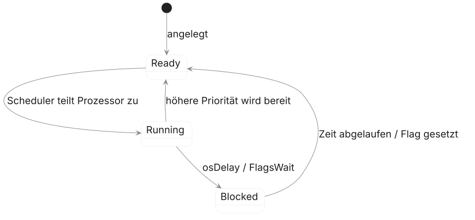
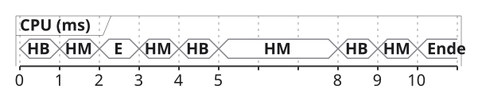
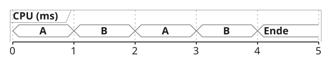
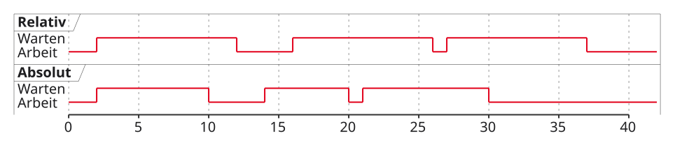
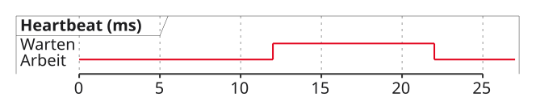
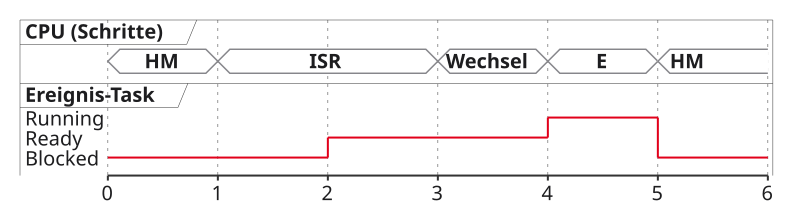

Vom Dispatcher zum Echtzeitbetriebssystem
Vorlesung 1: Reagieren durch Polling und Interrupts
Vorlesung 2: Aufgaben auswählen und Fristen prüfen
Heute: Aufgaben unterbrechen, fortsetzen und auf Ereignisse warten
Leitfrage: Wie bleibt eine periodische Aufgabe aktiv, wenn eine andere dauernd rechnet?
Ein Echtzeitbetriebssystem, englisch Real-Time Operating System oder RTOS, ergänzt die bisherige Anwendung um einen Betriebssystemkern. Dieser Kernel verwaltet Aufgaben und ihre Wartebedingungen. Er entscheidet, welche Aufgabe den Prozessor bekommt, und bewahrt den Zustand unterbrochener Aufgaben auf. Die zentrale Verarbeitungseinheit, englisch Central Processing Unit oder CPU, führt auf unserem betrachteten Kern weiterhin nur einen Befehlsstrom zur gleichen Zeit aus.
Sie benötigen die Begriffe Ausführungszeit, Periode, Deadline und Priorität aus Vorlesung 2 sowie die Unterscheidung von Hauptprogramm und Interruptbehandler aus Vorlesung 1. Kenntnis einer Betriebssystem-Programmierschnittstelle wird nicht vorausgesetzt. Wir verwenden dasselbe Beispiel in Zustandsbildern, Zeitachsen und Labor: Eine periodische Anzeige soll trotz laufender Hintergrundrechnung reagieren. Die Notizen erklären auch die Voraussetzungen der Beispiele und bilden zusammen mit den Folien einen Lerntext.
Lernpfad und Lernziele
Aufgabe, Thread und Job unterscheiden
Ready, Running und Blocked erklären
Prioritäten, Präemption und Starvation nachvollziehen
Speicher und zeitgesteuertes Warten planen
Einen Taster an eine wartende Aufgabe übergeben
Mutexbesitz, Ereignishinweis und Ressourcenzahl unterscheiden
Papieraufgaben zuerst; anschließend Umsetzung auf dem Board.
Der Lernpfad beginnt mit dem beobachtbaren Verhalten und führt erst danach zur technischen Umsetzung. Ein Thread ist ein fortsetzbarer Ausführungsablauf. Ein Job ist eine einzelne Aktivierung einer Aufgabe. Ready bedeutet ausführungsbereit, Running bedeutet gerade dem Prozessor zugeteilt und Blocked bedeutet wartend. Präemption bezeichnet das Verdrängen einer laufenden Aufgabe; Starvation ist das dauerhafte Ausbleiben von Prozessorzeit für eine bereite Aufgabe.
Am Ende können Sie aus einer Ereignisfolge eine Prozessorbelegung und die zugehörigen Zustände ableiten. Sie können begründen, warum aktives Warten und Betriebssystem-Warten unterschiedliche Folgen haben, und eine Speicherrechnung mit ausdrücklich benannten Annahmen durchführen. Der Papierteil der Übung prüft diese Fähigkeiten ohne Hardware. Das Programmieren macht anschließend die Konsequenzen derselben Entscheidungen sichtbar. Die Alltagsbilder zu Mutexen und Semaphoren ergänzen den Lernpfad: Sie unterscheiden Besitzschutz, einen ausstehenden Hinweis und mehrere verfügbare Marken. Neue Registerdetails und Energiesparverfahren sind Vertiefungen, keine Voraussetzung für den Einstieg.
Drei Wartewerkzeuge aus dem Alltag
Mutex
ein Toilettenschlüssel
wer die Ressource besitzt
Binärer Semaphor
Klingel mit Merklicht
höchstens ein offener Hinweis
Zähl-Semaphor
Parkhaus mit drei Plätzen
Anzahl freier Plätze
Schützen, signalisieren oder zählen: zuerst den Zweck wählen.
Die Alltagsbilder geben eine erste Orientierung, bevor wir die Wartezustände eines Threads technisch betrachten. Ein Thread ist ein vom Betriebssystem verwalteter Ausführungsablauf. Eine Ressource ist hier etwas gemeinsam Nutzbares, etwa ein Ausgabegerät oder ein Speicherpuffer. Die drei Mechanismen lösen unterschiedliche Aufgaben; äußerlich ähnliches Warten macht sie nicht austauschbar.
Mutex kommt von Mutual Exclusion, gegenseitiger Ausschluss. Beim Toilettenschlüssel darf jeweils nur die Person mit dem Schlüssel den Raum benutzen. Unsere Besitzregel lautet: Wer ihn genommen hat, gibt ihn selbst zurück. Ein Mutex merkt entsprechend, welcher Thread ihn erfolgreich erworben hat. Alle Zugriffe auf die geschützte Ressource müssen sich an denselben Vertrag halten.
Der binäre Semaphor entspricht einer Klingel mit Merklicht: Ein Klingeln setzt den offenen Hinweis, die zuständige Person nimmt ihn an und setzt die Anzeige zurück. Mehrmaliges Klingeln bei bereits leuchtender Anzeige speichert keine Anzahl. Der meldende und der annehmende Teilnehmer dürfen verschieden sein; es gibt keine Mutex-Besitzregel. In dieser Signalverwendung beginnt der Semaphor leer.
Ein Zähl-Semaphor kann dagegen mehrere verfügbare Marken speichern. Das Parkhaus startet im Beispiel mit drei freien Plätzen. Jede Einfahrt braucht eine Marke, jede Ausfahrt gibt eine zurück. Bei null freien Plätzen muss der nächste Teilnehmer warten. In den Detailbeispielen übertragen wir dies auf eine gemeinsame Ausgabe, einen Tasterhinweis und drei Messpuffer. Die Analogien versprechen weder eine bestimmte Bedienreihenfolge noch einen sofortigen Prozessorstart. Dazu müssen wir später Wartebedingung und Prozessorzuteilung unterscheiden.
Vier Schulstunden: gemeinsam verstehen und anwenden
0–45 min
Grundmodell und Prioritäten: 30 min
Papieraufgaben 1–2: 15 min
45–90 min
Speicher, Zeit und Wartewerkzeuge: 30 min
Papieraufgaben 3–4: 15 min
90–135 min
Firmwareaufbau: 25 min
Codeintegration: 20 min
135–180 min
Quiz und Abschluss: 20 min
Laborversuche: 25 min
Werkzeuge und Dual-Core-Grundstart vor dem Termin vorbereiten.
Vier Schulstunden zu je 45 Minuten ergeben 180 Minuten Unterrichtszeit. Pausen kommen gegebenenfalls zusätzlich hinzu. Die Tabelle ist eine didaktische Zeitplanung, keine garantierte Bearbeitungsdauer. Sie verbindet die folgenden 55 Folien mit den Aufgaben und dem Quiz, statt alle Folien am Stück vorzutragen. Die ersten beiden Abschnitte enden jeweils mit einer kurzen eigenständigen Papierphase und gemeinsamer Ergebnissicherung. Die neuen Mutex- und Semaphorbeispiele vermitteln hier die Grundidee; die Vertiefung der Ressourcenkonflikte folgt in Vorlesung 4.
Die Erklärung umfasst insgesamt 85 Minuten. Hinzu kommen 30 Minuten Papieraufgaben, 20 Minuten Codeintegration, 25 Minuten Laborversuche, 15 Minuten Quiz und fünf Minuten Abschluss. Die schnellen Verständnisfragen innerhalb der Erklärung werden durch kurze Einzelüberlegung und anschließendes Begründen bearbeitet. Gemeinsame Lösungen stehen in den jeweiligen Notizen.
Für den Programmierteil müssen STM32CubeMX, das Konfigurationswerkzeug, und Visual Studio Code mit der STM32-Erweiterung bereits installiert sein. Ein grundsätzlich lauffähiges Dual-Core-Projekt mit Cortex-M7- und Cortex-M4-Start ist Voraussetzung für die knappe Integrationsphase. Frische Installation und erstmalige Bootfehlersuche passen nicht verlässlich zusätzlich hinein. Fehlt dieser Grundstand, zeigt die Lehrperson die Codeintegration am vorbereiteten Projekt; die Studierenden bearbeiten die gleichen Zustands- und Diagnosefragen dazu. Hardwareversuche bleiben dann als Demonstration oder nicht selbst durchgeführt gekennzeichnet.
Was übernimmt das RTOS gegenüber Vorlesung 2?
Ruft endliche step()-Funktion auf
Startet einen fortsetzbaren Thread
Nächste Aufgabe erst nach Rückkehr
Höhere bereite Priorität kann verdrängen
Fortschritt ausdrücklich speichern
Kontext beim Wechsel sichern
Warten markieren und zurückkehren
Warteaufruf hält den Thread an
Interrupts können in beiden Varianten aktiv sein.
RTOS heißt Real-Time Operating System, also Echtzeitbetriebssystem. Der Dispatcher aus Vorlesung 2 ist eine zentrale Auswahlfunktion. Er ruft eine endliche C-Funktion namens step auf; diese muss selbst zurückkehren. Eine markierte Wartebedingung beendet nicht automatisch den aktuellen C-Aufruf. Die Anwendung speichert ihren Fortschritt deshalb etwa als Index oder Zustand.
Ein Thread darf dagegen eine Endlosschleife besitzen. Beim Betriebssystem-Warten wird sein Ausführungszustand gesichert; nach dem Aufwachen läuft er hinter dem Warteaufruf weiter. Der Kontext enthält die Information, welche Anweisung als Nächstes kommt, sowie Register- und Stackzustand. Präemptiv bedeutet, dass eine höhere ausführungsbereite Priorität diesen Wechsel auch ohne freiwillige Rückkehr auslösen kann. Eine gewöhnliche Funktion namens yield, die einfach eine andere Funktion aufruft, bewirkt das nicht.
Die Interrupts aus Vorlesung 1 bleiben davon getrennt: Auch ein kooperativer Schritt, der nie zurückkehrt, kann noch von einem erlaubten Interrupt unterbrochen werden. Der Prozessor ist dann nicht zwingend abgestürzt; nur die anderen kooperativen Schritte kommen nicht mehr dran.
Kurzaufgabe: Was blockiert hier tatsächlich?
/* C-Lehrcode: Ausschnitt eines kooperativen Dispatchers */ for (;;) { (); /* endliche Aktion */ (); /* kehrt in diesem Versuch nie zurück */ }
Wird Heartbeat ein zweites Mal aufgerufen?
Kann ein erlaubter Timerinterrupt trotzdem laufen?
Was muss ein RTOS zusätzlich sichern, um HeavyMath zu verdrängen?
Der C-Lehrcode knüpft an den Dispatcher aus Vorlesung 2 an. for mit leeren Bedingungen ist eine Endlosschleife. HeartbeatStep und HeavyStep sind hier gewöhnliche Funktionsaufrufe, keine bereits angelegten Betriebssystem-Threads. HeartbeatStep kehrt nach einer kurzen Aktion zurück. Für HeavyStep nehmen wir ausdrücklich an, dass die Funktion in einer eigenen Endlosschleife bleibt. Ein normaler Aufruf der nächsten Schleifeniteration erfolgt dann nicht.
Die erste Antwort lautet deshalb: Heartbeat wird nicht ein zweites Mal aufgerufen. Der Kontrollfluss hängt in HeavyStep fest. Zweitens kann ein zugelassener Timerinterrupt weiterhin ausgeführt werden, solange er nicht maskiert ist. Die Interruptbehandlung aus Vorlesung 1 ist nicht gleichbedeutend mit dem Rücksprung in den Dispatcher. Der Prozessor muss also weder abgestürzt noch vollständig untätig sein.
RTOS bedeutet Real-Time Operating System, Echtzeitbetriebssystem. Damit es drittens einen anderen Thread auswählen und HeavyMath später fortsetzen kann, muss es den Ausführungskontext sichern: nötige Register, Fortsetzungsstelle und Bezug auf den eigenen Stack, den Aufrufstapel. Ein Callback namens yield, der nur eine andere C-Funktion aufruft, genügt dafür nicht. Lassen Sie die drei Antworten zunächst begründen, bevor Sie zur Rollenverteilung der Laboraufgaben übergehen.
Unser durchgängiges Beispiel
Ereignis-Task
Tasterreaktion
wartet, reagiert kurz
Heartbeat
sichtbare Lebensanzeige
Aktion alle 500 ms
HeavyMath
Hintergrundrechnung
dauerhaft bereit
Prioritätsordnung: Ereignis-Task \(>\) Heartbeat \(>\) HeavyMath.
Lehrplattform: ein FreeRTOS-Kernel auf dem Cortex-M4.
Heartbeat bedeutet hier Lebensanzeige: Eine Leuchtdiode wird periodisch umgeschaltet. Zwei Umschaltungen im Abstand von 500 Millisekunden ergeben einen vollständigen Ein-Aus-Zyklus von ungefähr einer Sekunde. HeavyMath heißt die künstliche Rechenlast; sie wartet absichtlich nicht. Die Ereignis-Task verarbeitet einen Tasterhinweis und wartet danach wieder. Sie ist keine sicherheitszertifizierte Not-Halt-Funktion.
Eine Task ist im FreeRTOS-Kernel die verwaltete Aufgabe; über unsere Schnittstelle wird derselbe Ablauf Thread genannt. FreeRTOS ist der verwendete Echtzeitbetriebssystemkern. Alle drei Aufgaben teilen sich den Cortex-M4-Prozessorkern des STM32H755. Der Cortex-M7 übernimmt die im Projekt konfigurierte System- und Startfunktion. Er führt unsere drei Aufgaben nicht parallel aus und bekommt in dieser Übung keinen zweiten Kernel.
Die Zahlen sind Laborvorgaben, keine gemessenen Laufzeiten. Für gut lesbare Papierzeitachsen verkürzen wir später die Heartbeat-Periode ausdrücklich auf vier Millisekunden. Rollen und Prioritätsordnung bleiben identisch; die Papierwerte dürfen nicht als Messergebnis des Boards gelesen werden.
Was ein RTOS leistet — und was Sie planen müssen
Kernel: Ausführung auswählen, Kontext sichern, Warten verwalten
Anwendung: Prioritäten, Arbeitsumfang und Ereignisverhalten festlegen
Kosten: Verwaltungszeit und Speicher pro Thread
Fristen bleiben nachzuweisen: \(R_i \le D_i\)
Ein eigener Stack ist noch kein Speicherschutz.
Ein RTOS, Real-Time Operating System, bietet Mechanismen für die zeitliche Organisation, keine automatische Garantie für jede Anwendung. Der Kernel ist der Betriebssystemkern. Er verwaltet ausführungsbereite und wartende Threads und führt die notwendigen Kontextwechsel aus. Die Anwendung entscheidet jedoch, wie viel Arbeit ein Thread ausführt, wann er wartet und wie hoch seine Priorität ist.
Aus Vorlesung 2 bezeichnet die Antwortzeit \(R_i\) den Abstand von der Freigabe eines Jobs bis zu seiner Fertigstellung. Die relative Deadline \(D_i\) ist seine zulässige Frist, jeweils in derselben Zeiteinheit. Die Bedingung \(R_i\) kleiner oder gleich \(D_i\) muss unter den relevanten Last-, Interrupt- und Sperrzeitannahmen gelten. Ein hoher Thread, der niemals wartet, kann andere Aufgaben trotz eines korrekt arbeitenden Kernels dauerhaft verdrängen.
Der Stack ist ein Speicherbereich für Aufrufe und gesicherten Kontext. Separate Stacks erleichtern die Organisation, verhindern aber ohne passenden Speicherschutz keine fehlerhaften Zugriffe auf fremden Speicher. Auch die zusätzliche Verwaltungszeit und der Speicherbedarf gehören zum Entwurf. Zunächst ordnen wir ein, welche Software diese Aufgaben übernimmt.
Anwendung, Schnittstelle und Kernel
%%{init: {'theme': 'base', 'themeVariables': {'primaryColor': '#FFFFFF', 'primaryBorderColor': '#E5E5EA', 'primaryTextColor': '#1D1D1F', 'lineColor': '#86868B', 'secondaryColor': '#F5F5F7', 'tertiaryColor': '#FFFFFF'}}}%%
flowchart LR
A["Anwendung"] --> C["CMSIS-RTOS2"]
C --> F["FreeRTOS<br/>und Port"]
A --> H["STM32 HAL"]
F --> M["Cortex-M4"]
H --> M
style F fill:#FFFFFF,stroke:#E2001A,stroke-width:2px !important
Eine Schnittstelle ist noch kein Betriebssystem.
Die Abbildung wird von links nach rechts gelesen. Die Anwendung ruft Betriebssystemfunktionen über CMSIS-RTOS2 auf. CMSIS steht für Common Microcontroller Software Interface Standard; RTOS2 bezeichnet die zweite Version seiner Betriebssystem-Schnittstelle. Eine Programmierschnittstelle, englisch Application Programming Interface oder API, legt Namen, Parameter und Verhalten der Funktionen fest. Der Adapter bildet diese Aufrufe auf FreeRTOS ab. FreeRTOS ist der tatsächliche Kernel, der die Zustände und die Auswahl verwaltet.
Der Port ist die Anpassung des Kernels an Prozessor und Werkzeugkette. Er übernimmt unter anderem das Sichern und Wiederherstellen des Kontextes auf dem Cortex-M4. Der rote Rahmen hebt den Kernel hervor, nicht eine höhere Ausführungsgeschwindigkeit. Der zweite Pfad führt von der Anwendung zur STM32 Hardware Abstraction Layer, kurz HAL, der Hardware-Abstraktionsschicht für Peripheriezugriffe. Eine HAL-Funktion ist nicht allein durch ihren Namen ein Betriebssystem-Warteaufruf.
Beide Pfade laufen auf demselben Kern. Die native FreeRTOS-Schnittstelle und CMSIS-RTOS2 sind verschiedene Schnittstellen; wir verwenden im Labor durchgehend CMSIS-RTOS2 und mischen ihre Einheiten und Aufrufsignaturen nicht.
Ein Thread lebt länger als ein Job
/* C: Eintrittsfunktion; Ausschnitt, noch ohne Zeithelfer */ void Heartbeat( void * argument) { ( void ) argument; for (;;) { ( GPIOE, GPIO_PIN_1); ( period_ticks); } } Eine Schleifeniteration: Aktion und Warten. Der Thread bleibt bestehen.
Der C-Code zeigt die Eintrittsfunktion eines Threads, keinen vollständigen Firmwarestart. Heartbeat ist der Funktionsname. argument ist der Zeiger, den die Threadanlage als frei wählbares Argument übergibt; die Umwandlung zu void kennzeichnet ihn als absichtlich unbenutzt. for mit zwei leeren Bedingungen ist eine Endlosschleife. Die Variable period_ticks muss vor der Verwendung mit einer positiven Tickzahl initialisiert sein; ihre Umrechnung erklären wir später.
HAL heißt Hardware Abstraction Layer, Hardware-Abstraktionsschicht. HAL_GPIO_TogglePin schaltet einen General-Purpose Input/Output, also einen allgemeinen Ein-/Ausgangspin, um. GPIOE ist Port E und GPIO_PIN_1 dessen Pin 1; im Labor ist dort die gelbe Leuchtdiode angeschlossen. osDelay ist der CMSIS-RTOS2-Warteaufruf für relative Kernelticks. Er blockiert den Thread und kehrt später zurück, sodass die nächste Schleifeniteration beginnt.
Eine einzelne periodische Aktivierung ist ein Job. Der Thread besteht über viele Jobs hinweg und besitzt seinen eigenen Fortsetzungszustand. Ein normales return ist hier kein geplantes Threadende. Unsere Labor-Threads bleiben bestehen und warten wiederholt. Das Beispiel nutzt zunächst relatives Warten; für einen stabilen periodischen Sollplan ersetzen wir es später durch ein absolutes Ziel.
Freigabe, Start und Fertigstellung eines Jobs
Papierbeispiel für einen Heartbeat-Job:
Freigabe \(r\)
4 ms
darf ab jetzt arbeiten
Start \(s\)
5 ms
erhält tatsächlich den Prozessor
Fertigstellung \(f\)
6 ms
Aktion beendet
Absolute Deadline \(d=r+D\)
8 ms
letzte zulässige Fertigstellung
\(R=f-r=2\,\mathrm{ms}\) ; Startverzögerung \(s-r=1\,\mathrm{ms}\) .
Ein Job ist eine einzelne Aktivierung einer Aufgabe, hier eine Heartbeat-Aktion. Die Tabelle verwendet das Papiermodell mit einer relativen Deadline D von vier Millisekunden. Alle Werte sind didaktische Annahmen, keine Messung. Die Freigabe r bei vier Millisekunden macht die Aufgabe arbeitsfähig. Der Start s liegt erst bei fünf Millisekunden, weil wir eine Millisekunde vorherige höherpriore Arbeit annehmen. Die Fertigstellung f bei sechs Millisekunden beendet die Aktion.
Die absolute Deadline d liegt bei r plus D, also vier plus vier gleich acht Millisekunden. Die Antwortzeit R ist f minus r, hier sechs minus vier gleich zwei Millisekunden. Die Startverzögerung s minus r beträgt eine Millisekunde. Im vereinfachten Modell ohne weitere Unterbrechung beträgt der reine Prozessorbedarf f minus s eine Millisekunde. Mit Interrupts oder Präemption wäre diese Gleichsetzung nicht automatisch zulässig; Präemption ist das Verdrängen durch eine andere Aufgabe.
Der Job hält seine Frist, weil R kleiner oder gleich D ist. Eine spätere Prozessorzuteilung ist daher nicht automatisch eine Deadlineverletzung. Der langlebige Thread kann nach der Fertigstellung bereits wieder auf seine nächste Freigabe warten. Diese Unterscheidungen erklären, warum wir im nächsten Schritt Bereitschaft und tatsächliche Ausführung als getrennte Zustände benötigen.
Drei Zustände beantworten drei Fragen
Ready
Arbeit möglich, wartet auf Prozessor
ja, nach Priorität
Running
gerade zugeteilter Thread
bereits ausgewählt
Blocked
wartet auf Zeit oder Ereignis
nein
Auf einem Kern höchstens ein zugeteilter Thread; Interrupts können ihn unterbrechen.
Ready bedeutet ausführungsbereit: Die Aufgabe könnte weiterarbeiten, bekommt aber möglicherweise noch keine Prozessorzeit. Running bedeutet, dass der Scheduler, also die Auswahlfunktion des Betriebssystems, diesem Thread aktuell den Prozessor zugeteilt hat. Blocked bedeutet, dass eine Wartebedingung noch nicht erfüllt ist. Ein wartender Thread wird bei der Auswahl übergangen, unabhängig davon, wie hoch seine Priorität ist.
Die Ereignis-Task ist deshalb zu Beginn Blocked. Heartbeat kann laufen, obwohl die Ereignis-Task höher priorisiert ist. Nach dem periodischen Warteaufruf ist auch Heartbeat Blocked, sodass HeavyMath rechnen kann. Wichtig ist die Trennung von Ready und Running: Eine abgelaufene Wartezeit erlaubt die Ausführung, garantiert aber noch nicht deren Beginn.
Ein Interruptbehandler kann den zugeteilten Thread unterbrechen. Dabei rechnen keine zwei Threads gleichzeitig auf demselben Kern. In einfachen Taskzustandsskizzen bleibt der unterbrochene Thread der zugeteilte Running-Kontext, während die tatsächliche Prozessorbelegung vorübergehend Interruptarbeit zeigt. Im nächsten Bild kennzeichnen wir die Übergänge zwischen den drei Grundzuständen; weitere Verwaltungszustände werden hier bewusst nicht benötigt.
Zustandswechsel: bereit werden ist noch nicht laufen

Die Abbildung ist ein Zustandsdiagramm, keine Zeitachse. Die Kästen sind die Zustände Ready, Running und Blocked; die beschrifteten Pfeile nennen die Ursachen. Ready heißt ausführungsbereit, Running heißt zugeteilt und Blocked heißt wartend. Der Anfangspfeil zeigt die vereinfachte Anlage eines noch nicht wartenden Threads. Erst die Auswahl durch den Scheduler macht aus Ready den zugeteilten Running-Thread.
osDelay ist ein relativer Zeitwarteaufruf. FlagsWait steht verkürzt für osThreadFlagsWait, das Warten auf Hinweisbits des eigenen Threads. Ein solcher Aufruf führt von Running nach Blocked. Der Ablauf der Wartezeit oder das Setzen eines passenden Bits führt nach Ready. Von dort muss die Prozessorzuteilung noch erfolgen. Wird währenddessen eine höhere Priorität bereit, gelangt der verdrängte Thread zurück nach Ready und bewahrt seinen Fortschritt.
Administrative Vorgänge wie Suspendieren oder Löschen sind nicht Teil dieses Grundbilds. Insbesondere ist Blocked kein Fehlerzustand. Verständnisfrage: Die Wartezeit einer niedrigen Aufgabe endet, während eine höhere dauerhaft rechnet. Wohin wechselt sie? Nach Ready; sie bleibt dort, bis die Auswahl ihr tatsächlich Zeit zuteilt.
Welche Aufgabe läuft als Nächstes?
Wartende Aufgaben aus der Auswahl ausschließen
Höchste bereite Taskpriorität auswählen
Ihren Kontext auf dem Prozessor fortsetzen
Höhere bereite Priorität verdrängt die laufende niedrigere
Nicht jede Tickgrenze erzeugt einen Wechsel
Ereignisse können Wechsel auch zwischen Ticks auslösen
Die Regeln gelten für unseren präemptiven FreeRTOS-Betrieb mit festen Prioritäten und einem Kern. Präemptiv bedeutet, dass der laufende Thread ohne eigene Rückkehr verdrängt werden kann. Eine Taskpriorität beschreibt ihre Rangfolge gegenüber anderen Tasks. Entscheidend ist nicht die höchste angelegte, sondern die höchste ausführungsbereite Priorität. Eine hoch priorisierte Aufgabe in Blocked gehört nicht zur Ready-Auswahl.
Im Normalbetrieb wartet die Ereignis-Task auf den Taster. Heartbeat wird periodisch bereit und verdrängt die niedrigere HeavyMath-Aufgabe. Nach seinem Warteaufruf übernimmt HeavyMath wieder. Ein Kernel-Tick ist die periodische Zeiteinheit des Betriebssystems. Er kann abgelaufene Wartebedingungen erkennen; wenn daraus keine neue Auswahl folgt, läuft derselbe Thread weiter.
Ein zugelassenes Interrupt-Ereignis kann ebenfalls eine höhere Aufgabe bereit machen. Deren Start muss dann nicht bis zum nächsten Tick warten, wohl aber bis zum Ende erforderlicher Interrupt- und Kontextwechselarbeit. Die abstrakte Auswahlregel aus Vorlesung 2 bleibt somit erhalten. Das RTOS ergänzt die technische Fähigkeit, den ausgewählten Kontext zu unterbrechen und fortzusetzen.
Die Ready-Auswahl gemeinsam durchführen
Momentaufnahme, strikte Prioritätsordnung:
Ereignis-Task
hoch
Blocked
Heartbeat
mittel
Ready
HeavyMath
niedrig
Ready
Wer erhält den Prozessor?
Tasterhinweis kommt: Welche Auswahl folgt?
Ereignis-Task wartet erneut: Wer darf fortsetzen?
Ready heißt ausführungsbereit und Blocked heißt wartend. Die Tabelle ist eine Momentaufnahme, keine vollständige Zeitachse. Wir nehmen einen präemptiven Kernel mit drei verschiedenen Prioritäten und zulässigen Kontextwechseln an. Präemptiv bedeutet, dass die laufende niedrigere Aufgabe ohne ihre freiwillige Rückkehr verdrängt werden kann.
Die erste Auswahl fällt auf Heartbeat. Die Ereignis-Task hat zwar die höchste angelegte Priorität, ist aber Blocked und gehört nicht zur Auswahl. HeavyMath ist bereit, hat jedoch die niedrigere Priorität. Zweitens macht ein Tasterhinweis die Ereignis-Task Ready. Nach der erforderlichen Interrupt- und Wechselarbeit erhält sie als höchste bereite Aufgabe den Prozessor. Der Heartbeat-Kontext wird gesichert, damit er fortgesetzt werden kann; seine Bereitschaft geht dadurch nicht verloren.
Drittens blockiert die Ereignis-Task nach ihrer kurzen Reaktion wieder. Solange Heartbeat seine Aktion noch nicht beendet und seinen Warteaufruf nicht ausgeführt hat, läuft Heartbeat weiter. Erst nach dessen Blockieren kommt HeavyMath zum Zug. Die Fragen verlangen keine Kenntnis einer internen Listenimplementierung. Entscheidend sind allein die Wartebedingungen und die höchste verbleibende Priorität. Genau diese Auswahl wiederholt sich in der folgenden Zeitachse.
Eine Zeitachse für das Beispiel
Papiermodell: Heartbeat-Periode \(4\,\mathrm{ms}\) , Aktionszeit \(1\,\mathrm{ms}\) ; Tasterereignis bei \(2\,\mathrm{ms}\) , Reaktion \(1\,\mathrm{ms}\) . Wechsel- und Interruptkosten hier \(0\) . HB = Heartbeat, HM = HeavyMath, E = Ereignis-Task.

CPU steht für Central Processing Unit, die zentrale Verarbeitungseinheit. Die Abbildung zeigt ausschließlich deren Belegung auf dem betrachteten Kern. Die horizontale Achse ist Zeit in Millisekunden. HB bezeichnet Heartbeat, HM HeavyMath und E die Ereignis-Task. Heartbeat wird bei 0, 4 und 8 Millisekunden freigegeben und arbeitet jeweils eine Millisekunde. Die Ereignis-Task wartet zunächst; bei 2 Millisekunden wird sie bereit und arbeitet bis 3 Millisekunden. HeavyMath ist dauerhaft bereit und füllt die übrigen Intervalle. Der rote Signalverlauf gehört zum einheitlichen Diagrammstil, nicht zu einer zusätzlichen Prioritätsskala.
Wir nehmen alle Kontextwechsel- und Interruptkosten mit null an und zeichnen deshalb den Wechsel unmittelbar am Ereignis. Das ist eine Modellrechnung, keine Boardmessung. Im Labor gilt weiterhin die Periode von 500 Millisekunden. Die kurzen Papierwerte dienen der übersichtlichen Rechnung.
Von 0 bis 10 Millisekunden bekommt Heartbeat insgesamt drei Millisekunden, die Ereignis-Task eine und HeavyMath sechs. Die Unterbrechung bei 2 Millisekunden macht aus HeavyMath Ready, nicht Blocked: Seine Arbeit wäre möglich, aber die höhere Priorität erhält den Prozessor. Das Beispiel verbindet Zustände und Auswahl und bereitet die selbstständige Papieraufgabe vor.
Prüfen Sie die Zustände selbst
Im vorigen Papiermodell:
Welche Zustände haben die drei Tasks bei \(t=1{,}5\,\mathrm{ms}\) ?
Welche Zustände haben sie bei \(t=2{,}5\,\mathrm{ms}\) ?
Taster zusätzlich genau bei \(t=4\,\mathrm{ms}\) : Wann beginnt Heartbeat?
Bleibt seine Deadline \(D=4\,\mathrm{ms}\) eingehalten?
Eine Task ist eine vom Kernel verwaltete Aufgabe. Die Zustände heißen Ready, also ausführungsbereit, Running, also zugeteilt, und Blocked, also wartend. Es gelten weiterhin die Prioritäten Ereignis-Task über Heartbeat über HeavyMath und die vernachlässigten Wechselkosten. Die Fragen lassen sich durch die höchste bereite Priorität beantworten, nicht durch die Reihenfolge in einer Quellcodedatei.
Bei 1,5 Millisekunden ist Heartbeat nach seiner Aktion Blocked, die Ereignis-Task wartet ebenfalls und ist Blocked, HeavyMath ist Running. Bei 2,5 Millisekunden ist die Ereignis-Task Running, Heartbeat noch Blocked und HeavyMath Ready. Für das zusätzliche Ereignis bei 4 Millisekunden nehmen wir an, dass die vorherige Reaktion beendet ist. Heartbeat und die Ereignis-Task werden dann gleichzeitig bereit. Die höhere Ereignis-Task läuft von 4 bis 5; Heartbeat erst von 5 bis 6 Millisekunden.
Die Antwortzeit des Heartbeat-Jobs ist damit R gleich 6 minus 4 gleich 2 Millisekunden. D bezeichnet seine relative Deadline, hier vier Millisekunden. Weil R kleiner oder gleich D ist, hält dieser Job die Modellfrist ein. Ein verspäteter Start ist also nicht automatisch eine Deadlineverletzung. Mit einer Deadline von einer Millisekunde würde derselbe Job dagegen scheitern.
Starvation: der Kernel arbeitet, eine Task wartet vergeblich
Änderung: HeavyMath \(>\) Heartbeat; HeavyMath bleibt Ready.
Heartbeat wird bereit, bekommt aber keine Prozessorzeit
osThreadYield() in HeavyMath hilft der niedrigeren Priorität nichtDie LED bleibt in ihrem zuletzt erreichten Zustand
Keine gemeinsame Ressource: keine Priority Inversion
Starvation bedeutet Aushungern: Eine ausführungsbereite Task erhält über unbegrenzte Zeit keine Prozessorzeit. Eine Task ist die verwaltete Aufgabe. Mit HeavyMath über Heartbeat wählt der Scheduler immer wieder HeavyMath, solange die noch höhere Ereignis-Task wartet. Heartbeat bleibt nach seiner Freigabe Ready, also ausführungsbereit, statt Running, also tatsächlich zugeteilt. Eine zuvor eingeschaltete Leuchtdiode muss nicht dunkel werden; sie kann einfach eingeschaltet bleiben.
osThreadYield fordert über CMSIS-RTOS2 eine erneute Auswahl an. CMSIS heißt Common Microcontroller Software Interface Standard, RTOS2 dessen Betriebssystem-Schnittstelle. Yield macht HeavyMath nicht wartend und garantiert keine Zuteilung an niedrigere Prioritäten. Eine gleich hohe bereite Aufgabe wäre ein anderer Fall.
Priority Inversion, Prioritätsinversion, setzt hier das Warten auf eine gemeinsame Ressource voraus, die eine niedrigere Aufgabe hält. Eine mittlere Aufgabe kann deren Freigabe verzögern. Das kommt in diesem Versuch nicht vor. Deshalb diagnostizieren wir Starvation. Im Labor wird die normale Prioritätsordnung anschließend durch Neukonfiguration und Neustart wiederhergestellt. Das Problem zeigt, warum wir neben Prioritäten auch das Warteverhalten planen müssen.
Eine falsche Priorität gezielt reparieren
HeavyMath \(>\) Heartbeat, beide Ready:
osThreadYield() in HeavyMath?
HeavyMath unter Heartbeat setzen
?
HeavyMath zeitweise blockieren
?
Welche Änderung erfüllt weiterhin „Hintergrundrechnung nutzt freie Zeit“?
Ready bedeutet ausführungsbereit. HeavyMath ist die Hintergrundrechnung und Heartbeat die periodische Lebensanzeige. Die Ausgangslage ist Starvation, das Aushungern der niedrigeren bereiten Aufgabe. Zur Diagnose verändern wir jeweils genau eine Eigenschaft, damit die Wirkung nachvollziehbar bleibt.
osThreadYield ist der Yield-Aufruf der CMSIS-RTOS2-Schnittstelle. CMSIS steht für Common Microcontroller Software Interface Standard. Yield fordert eine erneute Auswahl an, lässt HeavyMath aber Ready. Deshalb wird dieselbe höchste bereite Priorität erneut gewählt: Diese Änderung hilft Heartbeat nicht.
Eine niedrigere HeavyMath-Priorität hilft unmittelbar. Sobald Heartbeat bereit wird, gewinnt es; HeavyMath nutzt weiter alle Lücken. Das passt zum beabsichtigten Rollenmodell. Zeitweises Betriebssystem-Warten in HeavyMath kann Heartbeat ebenfalls Zeit verschaffen, weil HeavyMath dann Blocked, also wartend, ist. Bei weiterhin höherer HeavyMath-Priorität hängt das Heartbeat-Zeitverhalten jedoch von Häufigkeit und Dauer dieser Lücken ab. Eine beliebig kurze Pause ist kein neuer Fristnachweis.
Ein Kernel ist also nicht falsch, nur weil er die konfigurierte Auswahl korrekt durchsetzt. Die Reparatur muss den Entwurf von Rangfolge und Warteverhalten treffen. Der nächste Fall betrachtet bewusst gleiche Prioritäten; diese dürfen nicht mit der hier benutzten strikten Ordnung verwechselt werden.
Gleiche Priorität und Idle: zwei andere Fälle
Gleich hohe Ready-Tasks: Verhalten hängt von Zeitscheiben-Konfiguration ab
osThreadYield() kann einer gleich hohen bereiten Task Gelegenheit gebenIdle ist die Kernel-Aufgabe mit niedrigster nativer Priorität
Dauerbereites HeavyMath oberhalb von Idle verhindert dessen Ausführung
Tickless Idle ist eine spätere Vertiefung.
Ready heißt ausführungsbereit. Native Priorität bezeichnet die FreeRTOS-interne Zahlenstufe; größere Zahlen bedeuten höhere Dringlichkeit. Gleiche Prioritäten sind kein Fall der vorigen strikten Ordnung. configUSE_TIME_SLICING legt in FreeRTOS fest, ob bereite Aufgaben derselben Stufe durch Tick-Zeitscheiben rotieren. Andere Ereignisse und explizites Yield können ebenfalls zu einer neuen Auswahl führen. osThreadYield ist der Schnittstellenaufruf dafür; daraus entsteht keine allgemeine Fairnessgarantie für niedrigere Stufen.
Idle bedeutet Leerlauf. Die Idle-Task ist eine Kernelaufgabe, die mit der niedrigsten nativen Priorität existiert, damit auch ohne bereite Anwenderaufgabe ein ausführbarer Kontext vorhanden ist. Sie kann konfigurationsabhängig Aufräumarbeiten übernehmen. HeavyMath ist im Normalversuch darüber und ständig bereit. Daher läuft Idle nicht und die hohe Gesamtauslastung ist erwartbar, obwohl Heartbeat oft wartet.
Tickless Idle bezeichnet das Unterdrücken geeigneter periodischer Kernel-Ticks in längeren Leerlaufphasen. Es setzt passende Bedingungen und eine Timerintegration voraus; das Einschalten allein spart bei unserem dauerbereiten HeavyMath keine Leerlaufenergie. Detaillierte Energiesparrechnung ist für das Grundmodell heute nicht notwendig.
Zeitscheiben bei gleicher Priorität
Lehrmodell: A und B gleich hoch, ständig ausführbar; Tick \(1\,\mathrm{ms}\) , Zeitscheiben aktiv, Start mit A, Zusatzkosten \(0\) .

Eine niedrigere Ready-Task kommt in diesem Modell weiterhin nicht dran.
Die Abbildung zeigt die tatsächliche Prozessorbelegung im vereinfachten Zeitscheibenmodell. A und B sind zwei Aufgaben derselben Prioritätsstufe und bleiben ständig ausführbar: Eine ist Running, also zugeteilt, die andere Ready, also ausführungsbereit. Die horizontale Achse ist Zeit in Millisekunden. Ein Tick, die Kernel-Zeiteinheit, entspricht hier einer Millisekunde. Wir nehmen aktivierte Zeitscheiben, keine dritte gleichpriore Aufgabe und einen Start mit A an.
A läuft von null bis eins, B von eins bis zwei, dann wieder A bis drei und B bis vier Millisekunden. Der Wechsel erfolgt hier an jeder Tickgrenze. Das ist keine Aussage, dass jeder Tick in jeder Anwendung einen Kontextwechsel auslösen muss. In FreeRTOS steuert configUSE_TIME_SLICING die Tickrotation gleichpriorer bereiter Aufgaben. Präemption, das Verdrängen, ist im Modell ebenfalls aktiviert. Kosten für Verwaltung und Registerwechsel sind mit null angesetzt.
Eine niedrigere bereite Aufgabe bleibt trotzdem ausgeschlossen, solange auf dieser höheren Stufe jemand bereit ist. Zeitscheiben schaffen also eine Aufteilung innerhalb einer Stufe, keine allgemeine Fairness über alle Prioritäten. Mit deaktivierten Zeitscheiben folgt die eingezeichnete Rotation nicht allein aus den Ticks; Blockieren oder explizites Yield können dennoch neue Auswahlgelegenheiten schaffen. Diese Abbildung ist eine Modellspur, keine aus dem Board gewonnene Messung.
Warum kann ein Thread mitten im Code weiterlaufen?
%%{init: {'theme': 'base', 'themeVariables': {'primaryColor': '#FFFFFF', 'primaryBorderColor': '#E5E5EA', 'primaryTextColor': '#1D1D1F', 'lineColor': '#86868B', 'secondaryColor': '#F5F5F7', 'tertiaryColor': '#FFFFFF'}}}%%
flowchart LR
S["A: Kontext sichern"] --> W["Scheduler: B wählen"]
W --> L["B: Kontext laden"]
Kontext = Registerzustand + Stackbezug + nächste Ausführung.
Ein Thread ist ein fortsetzbarer Ablauf. Sein Kontext ist der Zustand, der für dieselbe Fortsetzung benötigt wird: Registerwerte, Bezug auf seinen Stack und die nächste auszuführende Anweisung. Der Stack ist der Speicher für Aufrufzustand und gesicherte Werte. Die Abbildung ist ein Ablaufbild; die Pfeile zeigen die logische Reihenfolge, keine gemessenen Zeitabstände.
Auf dem Cortex-M4 bewirkt der Eintritt in eine Systemausnahme zunächst einen Teil der Registersicherung durch die Hardware. Der FreeRTOS-Port, die Prozessoranpassung des Kernels, ergänzt die nötige Sicherung. PendSV bedeutet Pendable Service, eine aufschiebbare Systemausnahme, über die der übliche Port den eigentlichen Kontextwechsel organisiert. Der Scheduler wählt den nächsten Thread. Dessen gesicherte Werte werden wiederhergestellt, sodass er an seiner eigenen Fortsetzungsstelle weiterläuft.
Das RTOS, Real-Time Operating System, hat damit mehr Möglichkeiten als ein gewöhnlicher C-Aufruf einer anderen Funktion. Es genügt nicht, nur einen Speicherpuffer für jede Aufgabe zu reservieren; der Port muss den zugehörigen Kontext tatsächlich aktivieren. Wir benötigen hier keine Assemblerimplementierung. Wichtig ist die Konsequenz: Diese Fortsetzbarkeit benötigt je Thread Speicher und Verwaltungsarbeit.
Kontextwechsel kosten Zeit: eine Modellrechnung
Lehrannahmen: \(C_{\mathrm{sw}}=200\) Zyklen pro Wechsel, \(f_{\mathrm{CPU}}=200\,\mathrm{MHz}\) , \(N_{\mathrm{sw}}=500\) Wechsel pro Sekunde.
\[
t_{\mathrm{sw}}=\frac{C_{\mathrm{sw}}}{f_{\mathrm{CPU}}}
=1\,\text{µs}
\]
\[
U_{\mathrm{sw}}=\frac{C_{\mathrm{sw}}N_{\mathrm{sw}}}{f_{\mathrm{CPU}}}
=0{,}0005=0{,}05\,\%
\]
Tick- und Interruptarbeit sind hier zusätzlich zu bilanzieren.
Ein Kontextwechsel sichert den Zustand eines Threads und lädt den eines anderen. CPU steht für Central Processing Unit, zentrale Verarbeitungseinheit. Die Wechselarbeit beansprucht Prozessorzeit, die der eigentlichen Anwendung in diesem Moment nicht zur Verfügung steht. Wir rechnen ausdrücklich mit einer angenommenen vollständigen Wechselkostenposition von 200 Prozessorzyklen; dieser Wert wurde nicht auf dem STM32 gemessen.
\(C_{\mathrm{sw}}\) bezeichnet die Zyklen pro Wechsel, \(f_{\mathrm{CPU}}\) die Zyklenzahl pro Sekunde. 200 Megahertz bedeutet 200 Millionen Zyklen pro Sekunde. Die Division von 200 durch 200 Millionen ergibt 0,000001 Sekunden, also eine Mikrosekunde je Wechsel. \(N_{\mathrm{sw}}\) ist die Rate der Wechsel, hier 500 pro Sekunde. Multipliziert mit 200 Zyklen entstehen 100000 Zyklen pro Sekunde Verwaltungsarbeit. Deren Anteil \(U_{\mathrm{sw}}\) ist 100000 geteilt durch 200 Millionen, also 0,0005 beziehungsweise 0,05 Prozent.
Diese geringe Modellzahl erlaubt keine universelle Latenz- oder Fristgarantie. Sie enthält die angenommene Wechselposition, nicht automatisch jeden Tick und jeden Interrupt. Auch Speicherzugriffe, Port, Compiler und verwendeter Kontext beeinflussen die tatsächlichen Kosten. Beim Bilanzieren darf dieselbe Arbeit nicht mehrfach als Wechsel- und Tickkosten gezählt werden. Zusätzlich zur Zeit benötigt die Kontextverwaltung Speicher pro Thread; diesen betrachten wir anschließend.
Stack und TCB gehören zu jedem Thread
Stack
Aufrufe, benötigte lokale Daten, Kontext
TCB
Verwaltungsdaten, Priorität, Listenbezug
Gemeinsamer Speicher
globale Daten, Kernelobjekte, Peripherie
CMSIS stack_size: Byte
Native Stacktiefe: StackType_t-Elemente; im betrachteten Port meist 4 Byte
TCB steht für Task Control Block, den Verwaltungsblock einer Aufgabe. Er hält unter anderem Priorität, Listenbezüge und einen Verweis auf den gesicherten Stackkontext. Stack heißt Aufrufstapel. Er wird für verschachtelte Aufrufe, benötigte automatische Objekte und Kontextinformationen genutzt. Nicht jede lokale C-Variable liegt zwangsläufig im Speicher; der Compiler kann sie in einem Prozessorregister halten. Globale Daten haben dagegen nicht automatisch einen separaten Besitzer pro Thread.
CMSIS, Common Microcontroller Software Interface Standard, verwendet in seiner Betriebssystem-Schnittstelle für das Attribut stack_size die Einheit Byte. Die native FreeRTOS-Threadanlage zählt Stackelemente des Typs StackType_t. Im üblichen hier betrachteten Cortex-M4-Port sind diese Elemente vier Byte groß. Daher bedeuten 128 native Elemente 512 Byte, während CMSIS stack_size gleich 512 bereits 512 Byte bedeutet.
Der im Konfigurationswerkzeug sichtbare Wert muss gegen den generierten Code geprüft werden. Eine nominelle Größe sagt außerdem noch nichts über ausreichende Reserve aus. Tiefe Aufrufketten und verwendete Bibliotheksfunktionen können den Bedarf erhöhen. Verwaltungsblock und Stack ermöglichen den Wechsel, bleiben aber ohne passenden Speicherschutz für fehlerhaften Anwendungscode zugänglich.
Papieraufgabe: Speicher planen
Lehrannahme: TCB pro Thread \(80\,\mathrm{Byte}\) .
Heartbeat
512 Byte
HeavyMath
1024 Byte
Ereignis-Task
1024 Byte
Wie viel Speicher benötigen diese drei Paare aus Stack und TCB?
Warum beweist dieser Wert noch keinen ausreichenden Heap?
TCB bedeutet Task Control Block, der Verwaltungsblock eines Threads. Die angenommenen 80 Byte sind ein didaktischer Wert, keine durch einen Firmwarebuild ermittelte Größe. Ein Thread ist ein fortsetzbarer Ablauf; zu jedem gehören Stack und Verwaltungsobjekt. Wir addieren die drei Stacks: 512 plus 1024 plus 1024 gleich 2560 Byte. Drei Verwaltungsblöcke ergeben 3 mal 80 gleich 240 Byte. Insgesamt sind das 2800 Byte, entsprechend 2800 geteilt durch 1024 gleich 2,734375 Kibibyte.
Der Heap ist ein Speicherbereich für dynamische Reservierungen. Die Rechnung lässt Idle, eine eventuell konfigurierte Timer-Task, weitere Kernelobjekte und Verwaltungszuschläge sowie Ausrichtung der Speicherblöcke weg. Auch der Handlerstack und sonstige globale Anwendungsdaten müssen in der Gesamtspeicherbilanz vorkommen. Der STM32H755 hat mehrere Speicherbereiche; diese werden nicht automatisch zu einem frei verfügbaren, zusammenhängenden Threadheap.
Werden die Taskblöcke dynamisch innerhalb eines bereits reservierten Heaps angelegt, darf man sie in der Linker-Speicherbilanz nicht zusätzlich außerhalb desselben Heaps zählen. Die Map-Datei, der Speicherbericht des Linkers, zeigt die tatsächlichen reservierten Bereiche. Eine erfolgreiche Anlage beweist ferner noch nicht, dass ein Stack unter jeder Eingabe ausreichend tief ist.
Reservierter Stack und beobachtete Reserve
Didaktischer Diagnosefall, kein Messwert:
Reservierter Stack: 1024 Byte
Native High-Water-Mark: 120 Elemente zu je 4 Byte
Beobachtete Reserve: \(120\cdot4=480\,\mathrm{Byte}\)
Bisherige größte Belegung nach diesem Indikator: \(1024-480=544\,\mathrm{Byte}\)
Dürfen Sie den Stack sofort auf 544 Byte verkleinern?
Ein Stack ist der Aufrufstapel und Speicher für benötigte lokale Daten sowie gesicherten Kontext. High-Water-Mark bezeichnet einen Indikator für die bisher kleinste unbenutzte Stackreserve. Die native FreeRTOS-Abfrage uxTaskGetStackHighWaterMark liefert im betrachteten Port freie Stackelemente; CMSIS-RTOS2 verwendet für osThreadGetStackSpace Byte, sofern diese Abfrage unterstützt wird. CMSIS heißt Common Microcontroller Software Interface Standard.
Im ausdrücklich angenommenen Diagnosefall sind 1024 Byte reserviert und noch 120 Elemente zu vier Byte als frei markiert. Die Reserve beträgt damit 480 Byte. 1024 minus 480 ergibt 544 Byte bisher beobachtete größte Belegung nach diesem Indikator. Diese Zahl beantwortet eine andere Frage als die Speicherreservierung: Reserviert ist der gesamte Bereich, tatsächlich beobachtet wurde nur ein Teil.
Die Antwort auf die Verkleinerungsfrage lautet deshalb nein. Ein noch nicht getesteter Fehlerpfad, andere Eingaben oder zusätzliche verschachtelte Aufrufe können mehr Speicher benötigen. Außerdem hängt der Indikator davon ab, wie unbenutzter Speicher erkannt wird; eine endliche Testreihe beweist keinen maximalen Bedarf aller Pfade. Eine Reserve muss begründet geplant und mit den relevanten Bedingungen geprüft werden. Die Übung verwendet Startgrößen, keine bereits nachgewiesenen Minima. Verwechseln Sie weder Elemente mit Byte noch Beobachtung mit vollständigem Nachweis.
Zeit in Ticks statt automatisch in Millisekunden
\[
T_{\mathrm{tick}}=\frac{1}{f_{\mathrm{tick}}},\qquad
n=\left\lceil\frac{t_{\mathrm{ms}}f_{\mathrm{tick}}}{1000}\right\rceil
\]
5 ms
5 Ticks
1 Tick
500 ms
500 Ticks
50 Ticks
osKernelGetTickFreq() liefert die Kernel-Tickfrequenz.
Ein Tick ist ein logischer Zeitschritt des Betriebssystems. \(f_{\mathrm{tick}}\) bezeichnet die Anzahl dieser Schritte pro Sekunde in Hertz. Seine Periodendauer \(T_{\mathrm{tick}}\) ist der Kehrwert und hat zunächst die Einheit Sekunden. Bei 1000 Hertz ergibt sich eine Millisekunde, bei 100 Hertz zehn Millisekunden. Der CMSIS-RTOS2-Aufruf osKernelGetTickFreq liefert diese Kernelfrequenz. CMSIS steht für Common Microcontroller Software Interface Standard, RTOS2 für seine Betriebssystem-Schnittstelle.
Für einen gewünschten Wert \(t_{\mathrm{ms}}\) in Millisekunden berechnen wir die Tickzahl n. Das Produkt aus \(t_{\mathrm{ms}}\) und \(f_{\mathrm{tick}}\) wird durch 1000 geteilt, weil eine Sekunde 1000 Millisekunden hat. Die oberen Ganzzahlklammern bedeuten Aufrunden. Damit wird ein kleiner positiver Millisekundenwert nicht zu null Ticks. Fünf Millisekunden werden bei 100 Hertz zu einem Tick; die verlangte Zeit ist in diesem Raster nicht genauer darstellbar.
In C muss das Zwischenprodukt ausreichend breit sein. Der Laborhelfer nutzt deshalb einen vorzeichenlosen 64-Bit-Typ. Eine aufgerundete Tickzahl ist jedoch keine Garantie für dieselbe Mindestdauer an der Wanduhr: Die Phase des Aufrufs innerhalb des Tickintervalls kommt noch hinzu. Wir verwenden keine Nullverzögerung als Warteersatz.
Tickphase: Wie lange wartet osDelay(1)?
Raster: Tickgrenzen bei \(0\) , \(1\) , \(2\,\mathrm{ms}\) .
0,1 ms
1 ms
0,9 ms
0,9 ms
1 ms
0,1 ms
Ready ist noch kein garantierter Start. Höherpriore Arbeit kann ihn weiter verzögern.
osDelay ist der CMSIS-RTOS2-Aufruf zum relativen Warten in Kernelticks. CMSIS heißt Common Microcontroller Software Interface Standard. Die Tabelle verwendet eine angenommene Kernel-Tickfrequenz von 1000 Hertz; die Tickgrenzen liegen also im Abstand von einer Millisekunde. Die Eins im Funktionsaufruf bedeutet ein Tick, nicht unabhängig von der Konfiguration eine Millisekunde Wandzeit.
Erfolgt der Aufruf bei 0,1 Millisekunden, ist die nächste Tickgrenze bei 1 Millisekunde. Der Thread ist idealisiert 0,9 Millisekunden Blocked, also wartend. Beim Aufruf bei 0,9 Millisekunden bleiben nur 0,1 Millisekunden. Interrupt- und Verwaltungskosten werden in dieser Phasenrechnung nicht aufgelöst. Sie beschreibt, wann die Zeitwartebedingung entfällt.
Ready bedeutet anschließend ausführungsbereit. Eine höher priorisierte Ready-Task oder noch laufende Interruptarbeit kann den tatsächlichen Start weiter verschieben. Auch ein nach oben umgerechneter Wert von einem Tick garantiert deshalb keine vollständige Tickperiode Mindestwartezeit. Diese Unterscheidung zwischen Wartebedingung und Prozessorstart wird beim Vergleich von relativer und absoluter Zeitplanung besonders wichtig.
Kurzprüfung: Tickzahl, Phase und Start
Kernel-Tick \(100\,\mathrm{Hz}\) ; Aufruf eine Millisekunde vor der nächsten Tickgrenze.
Welche Aussagen sind richtig?
osDelay(1) blockiert garantiert mindestens 10 ms.Der Thread kann nach ungefähr 1 ms Ready werden.
Ready bedeutet hier einen garantierten sofortigen Start.
Ein aufgerundeter 5-ms-Wert ergibt einen Tick.
Ein Tick ist die Zeiteinheit des Kernels. Bei 100 Hertz beträgt sein idealer Abstand zehn Millisekunden. osDelay ist der relative Tickwarteaufruf der CMSIS-RTOS2-Schnittstelle, also der Betriebssystem-Schnittstelle des Common Microcontroller Software Interface Standard. Die Eins zählt einen Tick und ist kein von der Tickphase unabhängiger Millisekundenwert.
Aussage eins ist falsch. Der Aufruf erfolgt nach der Vorgabe eine Millisekunde vor der nächsten Grenze. Der aktuelle Rest beträgt daher nur ungefähr eine Millisekunde. Aussage zwei ist richtig: Mit Ablauf der entsprechenden Tickwartebedingung wird der Thread Ready, also ausführungsbereit. Wir vernachlässigen in dieser Phasenrechnung Verwaltungs- und Interruptkosten. Aussage drei ist falsch, denn höhere bereite Aufgaben oder noch laufende Interruptarbeit können die tatsächliche Zuteilung weiter verzögern.
Aussage vier ist richtig. Fünf Millisekunden mal 100 Ticks pro Sekunde geteilt durch 1000 ergeben 0,5 Ticks. Aufrunden liefert einen Tick. Diese Umrechnung macht aus dem groben Raster aber keine garantierte fünf Millisekunden Mindestwartezeit. Lassen Sie insbesondere die Kombination aus richtiger Aussage vier und falscher Aussage eins begründen. Erst nach dieser Unterscheidung ist der Vergleich von aktivem und blockierendem Warten sinnvoll vollständig verstanden.
Aktives Warten oder den Thread blockieren?
Übliche HAL: aktive Warteschleife
Betriebssystem-Wartebedingung
Bleibt ausführungsbereit
Wird Blocked
Verbraucht zugeteilte CPU-Zeit
Andere Ready-Task darf laufen
Ein wartender Heartbeat senkt nicht zwingend die Gesamtlast: HeavyMath nutzt die Lücke.
HAL ist die Hardware Abstraction Layer, Hardware-Abstraktionsschicht von STM32. HAL_Delay prüft in der üblichen HAL aktiv den Fortschritt ihrer Zeitbasis. Der Thread bleibt ausführungsbereit und verbraucht Prozessorzeit, sobald er ausgewählt ist. Das ist Busy-Wait, aktives Warten. Höher priorisierte Threads können ihn bei aktiviertem präemptivem Betrieb trotzdem verdrängen; ein Busy-Wait deaktiviert nicht automatisch Interrupts.
osDelay ist der Zeitwarteaufruf der CMSIS-RTOS2-Betriebssystem-Schnittstelle. Er setzt den aufrufenden Thread auf Blocked, also wartend. Der Scheduler kann stattdessen eine Ready-Task auswählen; Ready bedeutet ausführungsbereit. Wenn keine Anwenderaufgabe bereit ist, kann die Idle-Task des Kernels laufen.
Für Heartbeat wählen wir Betriebssystem-Warten, weil seine Wartezeit nicht als Rechenlast dienen soll. HeavyMath füllt diese freigegebene Zeit absichtlich aus. Daher kann der Prozessor insgesamt weiter nahezu ausgelastet bleiben. Blockieren ist auch keine pauschale Energiespargarantie. Kernel-Ticks und andere Interrupts laufen je nach Konfiguration weiter. Die nächste Frage lautet nicht mehr, ob wir warten, sondern worauf sich der nächste periodische Termin beziehen soll.
Relative Pause oder absoluter Sollplan?
Lehrmodell: Arbeit \(2\) , \(4\) , \(1\,\mathrm{ms}\) ; Tick \(1\,\mathrm{ms}\) ; Kosten sonst \(0\) .
Arbeit, dann osDelay(10)
12, 26, 37 ms
Sollraster mit Periode 10 Ticks
10, 20, 30 ms
osDelayUntil(next) wartet auf einen absoluten Tickwert.
Sollraster stabil halten bedeutet nicht, jeden tatsächlichen Start zu garantieren.
osDelay wartet relativ ab dem aktuellen Aufruf in Kernelticks. osDelayUntil ist der CMSIS-RTOS2-Aufruf für einen absoluten Zielwert desselben Tickzählers. CMSIS steht für Common Microcontroller Software Interface Standard. Die Tabelle nimmt Arbeitsenden genau auf Tickgrenzen an und vernachlässigt weitere Störungen. Sonst müsste zusätzlich die Tickphase berücksichtigt werden.
Beim relativen Verfahren startet die erste Arbeit bei null und endet nach zwei Millisekunden. Zehn Ticks Warten führen zum nächsten Start bei 12. Die zweite Arbeit dauert vier Millisekunden und endet bei 16; nach der Pause startet die dritte bei 26. Sie endet bei 27, danach folgt der Start bei 37. Der Startabstand enthält also jeweils Arbeitsdauer plus Pause.
Beim absoluten Verfahren addieren wir die Periode dagegen zum bisherigen Solltermin: 0, 10, 20 und 30. Die jeweilige Arbeit passt hier vor den nächsten Termin. Ihre Dauer verschiebt das Sollraster nicht. Höherpriore Arbeit kann trotzdem bewirken, dass ein Thread erst beispielsweise bei 10,4 Millisekunden tatsächlich startet. Ein stabiler Freigabeplan ist deshalb kein Nachweis einer harten Frist und auch keine Garantie gegen physikalische Uhrabweichungen.
Das Sollraster in einer Abbildung
Tick \(1\,\mathrm{ms}\) ; Arbeitsdauern \(2/4/1\,\mathrm{ms}\) . Zwei getrennte Versuche, Achse in Millisekunden.

Die beiden Spuren sind getrennte Vergleichsversuche, keine gleichzeitig laufenden Aufgaben. Die horizontale Zeitachse zeigt Millisekunden unter der Lehrannahme eines Ticks pro Millisekunde. Ein Tick ist die Zeiteinheit des Kernels. Die Zustände Arbeit und Warten beschreiben die jeweilige Schleifenphase. R steht für das relative Verfahren mit zehn Ticks Pause nach jeder Arbeit, A für den absoluten Plan mit zehn Ticks Periode. Die Arbeitsdauern sind in beiden Versuchen zunächst zwei, vier und eine Millisekunde.
Lesen Sie die Wechsel von Warten zu Arbeit: Oben liegen sie bei 12, 26 und 37 Millisekunden, unten bei 10, 20 und 30. Die unterschiedlichen Startpunkte entstehen bereits ohne andere Last. Der relative Versuch addiert die Arbeitsdauer zum Abstand; der absolute Versuch richtet sich weiter nach dem bestehenden Solltermin.
Für die vierte Arbeitsphase ist nur der Beginn eingezeichnet, keine neue Ausführungsdauer angenommen. Alle Wechselkosten sind im Modell null. Das Diagramm ist kein Oszilloskopbild. Es zeigt den systematischen Unterschied der Planung. Die offene Frage ist nun: Was geschieht, wenn die Arbeit oder eine Störung den nächsten Solltermin überschreitet?
Ein verpasster Termin braucht eine Entscheidung
Zielzeit schon erreicht: nicht auf einen vergangenen Tick warten
Laborpolitik: zählen, neu auf jetzt + Periode ausrichten, dann warten
Keine sofortige Serie nachgeholter LED-Umschaltungen
Zielverfehlung im Code ist nicht automatisch eine Deadlineverletzung
32-Bit-Tickzähler: kurze Zukunftsabstände bis \(2^{31}-1\) Ticks; Umlauf beachten.
Der absolute Warteaufruf osDelayUntil aus CMSIS-RTOS2 benötigt einen zulässigen Zukunftsabstand. CMSIS ist der Common Microcontroller Software Interface Standard. Ein Tick ist die Kernel-Zeiteinheit. Ein 32-Bit-Zähler läuft nach seinem größten Wert wieder bei null weiter. Deshalb kann ein numerisch kleineres Ziel trotzdem in der Zukunft liegen. Für eindeutige kurze Abstände arbeiten wir mit höchstens 2 hoch 31 minus 1 Ticks.
Im Labor zählt ein verpasster Warte-Sollpunkt als Zielverfehlung. Die Anwendung setzt das nächste Ziel auf den aktuellen Tick plus Periode und wartet tatsächlich darauf. Damit entsteht nach längerer Verdrängung keine sofortige Folge mehrerer Heartbeat-Umschaltungen. Diese bewusste Neuausrichtung verlässt das alte Raster. Sie ist eine einfache Überlastpolitik, keine Reparatur eines Fristnachweises.
Eine Deadline ist die spezifizierte Fertigstellungsfrist eines Jobs. Ein übersprungener Wartepunkt sagt ohne eigene Deadlinedefinition noch nicht, welche Frist verletzt wurde. Der Helfer im Übungsblatt prüft das positive Intervall und behandelt auch eine Zielverfehlung zwischen Prüfung und Funktionsaufruf. Andere Rückgabefehler werden nicht still ignoriert. So bleibt das Grundbeispiel einfach, ohne vergangene Ziele als unendlich langes Warten umzudeuten.
Überlastpolitik an einem konkreten Sollpunkt
Neues Lehrbeispiel: Periode 10 Ticks, Tick \(1\,\mathrm{ms}\) ; erste Arbeit dauert 12 ms.

Ziel 10 verpasst \(\rightarrow\) zählen \(\rightarrow\) neues Ziel \(12+10=22\) .
Die Zeitachse ist ein neues, ausdrücklich angegebenes Überlastbeispiel. Ein Tick entspricht einer Millisekunde. Die Heartbeat-Periode soll zehn Ticks betragen, doch die erste Aktion benötigt angenommene zwölf Millisekunden ohne weitere Unterbrechung. Die Spur zeigt von null bis zwölf Arbeit und danach bis 22 Millisekunden Warten. Der Beginn der nächsten Aktion ist eingezeichnet; ihre weitere Dauer wird nicht neu angenommen.
Das ursprünglich berechnete Warteziel zehn liegt bei Arbeitsende bereits in der Vergangenheit. Unser Laborhelfer LabWaitNext zählt deshalb eine Wartezielverfehlung, setzt das Ziel auf aktuellen Tick plus Periode, also zwölf plus zehn gleich 22, und wartet tatsächlich bis dorthin. Das ist eine bewusste Neuausrichtung. Es ist keine Beibehaltung des ursprünglichen Rasters bei null, zehn, zwanzig und dreißig.
Eine andere spezifizierte Politik könnte den verpassten Termin überspringen und am nächsten alten Rasterpunkt zwanzig fortsetzen. Das ist nicht die hier implementierte Laborpolitik. Noch eine andere könnte einen Fehler melden. Ohne klaren Vertrag mehrere Aktionen sofort nachzuholen ist besonders bei einer sichtbaren Lebensanzeige wenig sinnvoll. Der Zähler bezeichnet zunächst verfehlte Warteziele. Ob zugleich eine Jobdeadline verletzt wurde, hängt von der separat festgelegten Fertigstellungsfrist ab.
Ein Tasterereignis an einen Thread übergeben
Interruptbehandler erkennt die Flanke und setzt ein Hinweisbit
Ereignis-Task wartet auf dieses Bit
Ereignis-Task reagiert kurz und wartet erneut
Derselbe gesetzte Bitwert zählt mehrere Flanken nicht getrennt
/* ISR: nur bei gültigem Handle und erlaubter IRQ-Priorität */ uint32_t result = osThreadFlagsSet( event_handle, 1 u );
Eine ISR ist eine Interrupt Service Routine, der Interruptbehandler. Ein IRQ ist ein Interrupt Request, eine Interruptanforderung. Die ISR soll kurz bleiben und keine blockierende Betriebssystemfunktion aufrufen. Sie setzt hier nur ein Hinweisbit für die Ereignis-Task. Thread-Flags sind solche Bits im Verwaltungszustand eines einzelnen Threads; Flags bedeutet Markierungsbits.
Der C-Ausschnitt nutzt CMSIS-RTOS2, die Betriebssystem-Schnittstelle des Common Microcontroller Software Interface Standard. event_handle ist die gültige Kennung der zuvor angelegten Ereignis-Task. Die Eins setzt Bit null. osThreadFlagsSet liefert einen Flagwert oder einen durch das Fehlerbit gekennzeichneten Fehler. result muss deshalb im vollständigen Programm über osFlagsError geprüft werden; ein Vergleich mit dem Statuswert osOK wäre unpassend.
Wenn dasselbe Bit zweimal vor der Verarbeitung gesetzt wird, ist es weiter nur gesetzt. Es enthält nicht den Wert zwei. Ein mechanischer Taster kann durch Prellen mehrere Flanken erzeugen. Wir legen im Labor deshalb fest, dass das Bit nur einen ausstehenden Reaktionswunsch darstellt und keine genaue Tastendruckzahl. Für eine verlustfreie Zählung wäre eine andere Kommunikation nötig, die spätere Vorlesungen behandeln. Zuerst muss der wartende Thread korrekt eingerichtet sein.
Warten auf das Flag ist keine Polling-Schleife
/* C: Schleifenausschnitt innerhalb der Ereignis-Task */ for (;;) { uint32_t flags = ( 1 u , osFlagsWaitAny, osWaitForever); if (( flags & osFlagsError) != 0 u ) { (); } ( GPIOB, GPIO_PIN_0); /* LD1 */ } Erfolg: das angenommene Bit wird ohne osFlagsNoClear automatisch gelöscht.
Der C-Ausschnitt ist die Warteschleife der Ereignis-Task. CMSIS-RTOS2 heißt die Betriebssystem-Schnittstelle des Common Microcontroller Software Interface Standard. osThreadFlagsWait prüft die eigenen Hinweisbits des aufrufenden Threads. Die Eins wählt Bit null. osFlagsWaitAny bedeutet, dass eines der angegebenen Bits genügt; bei einem einzigen Bit ist die Auswahl eindeutig. osWaitForever bedeutet Warten ohne Zeitablaufgrenze. for mit leeren Bedingungen wiederholt die Verarbeitung.
Solange kein passendes Bit gesetzt ist, ist der Thread Blocked, also wartend, und führt keine eigene Polling-Schleife aus. Nach einem erfolgreichen Aufwachen enthält flags die angenommenen Bits. uint32_t ist ein vorzeichenloser 32-Bit-Typ. Das reservierte osFlagsError-Bit kennzeichnet Fehler. Error_Handler ist die Fehlerbehandlung des Firmwareprojekts. Ein Erfolg wird nicht mit osOK verglichen.
HAL bedeutet Hardware Abstraction Layer. HAL_GPIO_TogglePin schaltet einen allgemeinen Ein-/Ausgangspin um: GPIOB ist Port B, GPIO_PIN_0 Pin null, die grüne Leuchtdiode LD1 des Kursboards. Nach der kurzen Reaktion wartet der Thread erneut. Ohne osFlagsNoClear löscht der erfolgreiche Wait das angenommene Bit automatisch. Ein zusätzliches blindes Löschen könnte ein inzwischen neu eingetroffenes Ereignis verlieren. Die LED zeigt Reaktionen, zählt aber wegen der Flagsemantik keine garantiert einzelnen Tastendrücke.
Zwei Flanken, ein Hinweisbit
1
erstes Setzen
1
2
zweites Setzen vor Verarbeitung
1
3
erfolgreicher Wait, automatisches Löschen
0
4
neues Setzen nach dem Wait
1
Wie viele Hinweise wurden bei Schritt 3 angenommen? Wie viele physische Flanken sind daraus rekonstruierbar?
Thread-Flags sind Markierungsbits eines bestimmten Threads. Die Tabelle zeigt aufeinanderfolgende Schritte, keine zeitlich maßstäbliche Spur. Das Bit null ist anfangs gelöscht. Die ersten beiden Operationen setzen jeweils genau dasselbe Bit. Setzen bedeutet eine logische Oder-Verknüpfung mit der Eins: Aus null wird eins und aus eins bleibt eins.
Beim erfolgreichen osThreadFlagsWait erhält der wartende Thread in Schritt drei das angeforderte Bit als gesetzten Hinweis. Diese Funktion gehört zur CMSIS-RTOS2-Schnittstelle des Common Microcontroller Software Interface Standard. Ohne die Option osFlagsNoClear werden die angenommenen Bits automatisch gelöscht. Ein neues Setzen nach dem angenommenen Wait bleibt wieder als ausstehender Hinweis erhalten; ein zusätzliches blindes Löschen ist dafür nicht vorgesehen.
Die Musterantwort lautet: In Schritt drei wurde ein gesetzter Hinweis angenommen. Aus dessen Wert allein lässt sich nicht rekonstruieren, ob eine oder mehrere Flanken davor auftraten. Im konkreten tabellierten Verlauf waren es zwei, aber diese Zusatzinformation stammt aus der Aufgabenbeschreibung und nicht aus dem Bit. Ein mechanischer Taster kann durch Prellen zusätzliche Flanken liefern. Das Labor spezifiziert deshalb einen Reaktionswunsch und keinen verlustfreien Tastendruckzähler. Geeignete zählende Kommunikation und Entprellung werden damit nicht durch dieses Bit ersetzt.
Mutex: eine Nachricht bleibt zusammen
Praxis: Zwei Tasks senden Temp=23 und Akku=80% über dieselbe serielle Ausgabe.
Denselben Mutex erwerben
Die vollständige Nachricht ausgeben
Den Mutex selbst wieder freigeben
Nur der Erwerber gibt frei; andere Tasks können blockierend warten.
Ein Mutex, von Mutual Exclusion für gegenseitigen Ausschluss, schützt einen gemeinsam benutzten Bereich durch eine Besitzerbeziehung. Eine Task ist die vom Kernel, dem Betriebssystemkern, verwaltete Aufgabe; wir verwenden dafür auch den Begriff Thread. Eine serielle Ausgabe überträgt Zeichen nacheinander. Im Beispiel schreiben zwei Tasks ihre Nachrichten zeichenweise über denselben Ausgabekanal. Durch Unterbrechung und Fortsetzung könnten sich die beiden Nachrichten auf dem Kanal vermischen, obwohl jede einzelne Task für sich eine richtige Zeichenfolge erzeugt.
Deshalb erwerben beide Tasks denselben Mutex vor der ersten Zeichenausgabe und geben ihn erst nach dem letzten Zeichen ihrer vollständigen Nachricht frei. Hat die Temperatur-Task den Mutex bereits, kann die Diagnose-Task blockierend auf ihn warten. Blocked bedeutet wartend: Sie verbraucht während dieses Wartens keine Prozessorzeit für eine eigene Prüfschleife. Die Temperatur-Task bleibt der Besitzer und muss selbst freigeben. Eine dritte Task darf die Sperre nicht stellvertretend aufheben.
Der Schutz funktioniert nur, wenn alle beteiligten Ausgabepfade ihn benutzen. Ein Mutex pro Task würde die gemeinsame Ausgabe nicht gegeneinander schützen. Bei einer asynchronen Übertragung muss die Besitzdauer außerdem bis zum tatsächlichen Ende der geschützten Gerätebenutzung reichen. Ein Mutex ist kein Ereignissignal aus einem Interruptbehandler. Das praktische Entscheidungskriterium lautet: Soll eine zusammengehörende Ressourcennutzung eines Besitzers ungeteilt bleiben? Die Folgen der entstehenden Wartezeiten und die Prioritätsvererbung werden in Vorlesung 4 vertieft; Prioritätsvererbung ist die zeitweise Anhebung der Priorität eines benötigten Besitzers.
Binärer Semaphor: ein Tasterhinweis weckt Arbeit
Praxis: Ein Tasterinterrupt meldet einen Reaktionswunsch an eine LED-Task.
Anfangszustand: leer, Zähler 0; Maximum 1
Der zulässige Interruptbehandler stellt eine Marke bereit
Die LED-Task erwirbt die Marke, schaltet die LED und wartet wieder
Meldender und Empfänger sind verschieden; kein Besitzer
Zwei Meldungen vor der Annahme speichern höchstens einen Hinweis.
Ein binärer Semaphor ist ein Kernelobjekt mit höchstens einer verfügbaren Marke. Binär bedeutet hier, dass sein verfügbarer Zähler nur null oder eins sein kann. Der Kernel ist der Betriebssystemkern. Eine LED ist eine Leuchtdiode; die LED-Task ist die Aufgabe, die sie im Beispiel ansteuert. Anders als beim Mutex gibt es keinen Besitzer, der eine zuvor erworbene Sperre selbst freigeben müsste.
Für einen Ereignishinweis wird der Anfangswert null gewählt: Es liegt noch kein Tasterhinweis vor. Die Task versucht eine Marke zu erwerben und wartet blockierend, solange keine verfügbar ist. Der Tasterinterrupt stellt über einen für diesen Kontext zugelassenen, nichtblockierenden Kernelaufruf eine Marke bereit. Das kann die Task ausführungsbereit machen. Erst nach dem Ende des Interruptbehandlers und der passenden Prozessorzuteilung kann sie die Marke erfolgreich annehmen, die Leuchtdiode umschalten und erneut warten. Der Interrupt muss ein gültiges Semaphorobjekt und eine für Kernelaufrufe zulässige Priorität benutzen.
Die Rollen sind absichtlich verschieden: Ein Teilnehmer meldet Arbeit, ein anderer nimmt sie an. Ein Mutex wäre dafür wegen seines Besitzvertrags ungeeignet. Ist bereits eine Marke gespeichert und wurde sie noch nicht angenommen, kann eine weitere Freigabe den Zähler nicht auf zwei erhöhen; die Freigabe meldet dann einen Ressourcenfehler. Das Ergebnis muss geprüft werden. Tasterprellen kann zusätzliche Meldungen erzeugen, und ein binärer Semaphor ist kein verlustfreier Tastendruckzähler. Sein Anfangswert eins hätte eine andere Bedeutung: Eine Marke wäre schon ohne erstes Ereignis verfügbar. Diese Signalverwendung ähnelt unserem Thread-Flag; den Unterschied klären wir nach dem zählenden Fall.
Zähl-Semaphor: drei Messpuffer gemeinsam nutzen
Praxis: Jeder aktive Messauftrag benötigt einen der drei Puffer. Maximum 3, Anfangswert 3: alle Puffer sind frei.
Noch kein Auftrag reserviert einen Puffer
3
Drei Aufträge haben je einen Puffer reserviert
0
Ein vierter Auftrag fordert einen Puffer an
0; er wartet
Die Rückgabe eines Puffers ermöglicht einen weiteren Erwerb. Der Zähler kennt die Anzahl freier Puffer; ihre Adressen werden separat verwaltet.
Ein Zähl-Semaphor speichert die Anzahl verfügbarer Marken bis zu einem festgelegten Maximum. Ein Puffer ist hier ein Speicherbereich für einen Messblock. Drei solcher Bereiche stehen bereit. Jeder aktive Messauftrag braucht genau einen Puffer, bis sein Messblock fertig verarbeitet ist. Deshalb zählen wir freie Puffer und starten mit drei Marken bei einem Maximum von drei.
Die Tabelle beschreibt die Zahl noch verfügbarer Berechtigungen. Nach dem ersten Erwerb bleiben zwei, nach dem zweiten eine und nach dem dritten null. Der vierte Auftrag kann deshalb keine Marke erwerben und wartet blockierend. Gibt einer der ersten Aufträge seinen Puffer zurück und stellt die Marke wieder bereit, kann ein wartender Auftrag erfolgreich erwerben. Bereit werden und tatsächlich laufen bleiben getrennte Schritte. Die Reihenfolge wartender Aufträge folgt den Regeln des verwendeten Betriebssystemkerns; die Parkhausanalogie verspricht keine allgemeine Reihenfolge nach Ankunft.
Wichtig ist die Grenze der Information: Die Zahl zwei sagt nicht, welche zwei Puffer frei sind. Nach dem Markenerwerb muss der Entwurf einen konkreten freien Puffer aus einer separat geschützten Verwaltung entnehmen. Bei der Rückgabe wird zuerst der Puffer wieder in diese Verwaltung aufgenommen und danach die Marke freigegeben. Eine Marke ohne tatsächlich verfügbaren Puffer wäre ein Fehler im Protokoll. Der Semaphor allein überträgt auch keine Messdaten.
Es gibt keine vom Semaphor erzwungene Besitzerzuordnung wie beim Mutex; der Entwurf muss die richtige Bilanz aus Reservierungen und Rückgaben sichern. Würden wir stattdessen noch unbearbeitete Ereignisse zählen, wäre ein Anfangswert null passend. Anfangswert und Maximum folgen also der gewählten Bedeutung des Zählers. Damit unterscheiden sich sowohl die Ressourcenzahl als auch der Zweck vom einzelnen Hinweisbit unseres bisherigen Tasterbeispiels.
Thread-Flag oder binärer Semaphor?
Im Kurs: CMSIS-RTOS2-Thread-Flags auf FreeRTOS.
Wo liegt der Hinweis?
Bit im Zielthread
Marke in eigenem Kernelobjekt
Wer nimmt ihn an?
dieser Zielthread
ein erwerbender Verbraucher
Mehrere Hinweisarten?
verschiedene Bits möglich
eine verfügbare Marke
Mehrfach melden vor Annahme?
dasselbe Bit bleibt gesetzt
Zähler bleibt höchstens 1
Beide dienen hier der Signalisierung. Ein Mutex schützt mit Besitz.
CMSIS heißt Common Microcontroller Software Interface Standard; RTOS2 bezeichnet die zweite Version seiner Betriebssystem-Schnittstelle. Ein Thread, auch Task genannt, ist ein verwalteter Ausführungsablauf. Mit Thread-Flag meinen wir hier ein Hinweisbit eines bestimmten Threads. osThreadFlagsSet setzt Bits gezielt beim angegebenen Zielthread. osThreadFlagsWait wartet auf Bits des aufrufenden Threads; er wartet damit nicht auf die privaten Thread-Flags einer anderen Task. Im verwendeten CMSIS-FreeRTOS-Adapter werden diese Bits über eine Task-Benachrichtigung des FreeRTOS-Betriebssystemkerns abgebildet. Native Task-Benachrichtigungen haben weitere Betriebsarten, darunter Zählverhalten; unsere Aussage bezieht sich auf die Bitverwendung.
Ein binärer Semaphor ist dagegen ein eigenes Kernelobjekt, auf dessen Handle mehrere Verbraucher warten können. Handle bedeutet die Kennung des Objekts. Eine bereitgestellte Marke ermöglicht genau einen erfolgreichen Erwerb. Ein Thread-Flag adressiert unmittelbar einen Zielthread; beim Semaphor kann eine Gruppe von verarbeitenden Threads auf dasselbe Objekt warten, und jeweils ein Erwerber verbraucht die Marke. Beides hat keinen Mutexbesitzer und ersetzt keinen vereinbarten Ressourcenschutz.
In beiden Fällen können wiederholte Meldungen zusammenfallen. Ein bereits gesetztes Bit erneut zu setzen bleibt eine gültige Bitsetzung. Eine weitere Semaphorfreigabe bei bereits voller Kapazität scheitert dagegen mit einem Ressourcenfehler. Der erfolgreiche Flag-Wait löscht die angenommenen Bits in unserer Standardeinstellung automatisch; der erfolgreiche Semaphorerwerb verbraucht eine Marke. Mehrere Flagbits erlauben außerdem verschiedene Hinweisarten und Wartebedingungen, nicht automatisch eine Anzahl gleicher Ereignisse.
Der Ausdruck FreeRTOS-Flag ist ohne Kontext mehrdeutig. FreeRTOS bietet auch Event-Gruppen, also eigene Objekte mit Ereignisbits, auf die mehrere Tasks warten können. Das Setzen solcher Bits kann mehrere passende Wartebedingungen erfüllen und mehrere Tasks wecken. Das ist eine andere Semantik als der Verbrauch einer einzelnen Semaphormarke. Im bisherigen Vorlesungscode verwenden wir CMSIS-Thread-Flags, keine Event-Gruppe. Für den weiteren Ereignisablauf bleiben Zielthread, Hinweisbit und zulässiger Interruptkontext entscheidend.
Vom Ereignis bis zur Reaktion
HM = HeavyMath; ISR = Interruptbehandler; E = Ereignis-Task. Die Achse zeigt Schritte, keine gemessenen Zeiten.

Die Abbildung ist eine schematische Ablaufdarstellung mit zwei Spuren. Die Zahlen auf der horizontalen Achse markieren nur aufeinanderfolgende Schritte, keine Millisekunden und keine gemessenen Laufzeiten. CPU heißt Central Processing Unit, die zentrale Verarbeitungseinheit. ISR heißt Interrupt Service Routine, der Interruptbehandler. Die obere Spur zeigt, welche Art von Arbeit den Prozessor benutzt: HM ist HeavyMath, ISR der Interruptbehandler, Wechsel der Kontextwechsel und E die Ereignis-Task. Die untere Spur zeigt den Zustand der Ereignis-Task.
Zunächst rechnet HeavyMath und die Ereignis-Task ist Blocked, also wartend. Der Taster löst die ISR aus. Nach dem Setzen des passenden Flags ist die Ereignis-Task Ready, also ausführungsbereit, aber die ISR muss erst fertig werden. Es folgt der zulässige Kontextwechsel. Dann ist die Ereignis-Task Running und führt ihre Reaktion aus. Sie wartet danach erneut und HeavyMath setzt seine Rechnung fort.
Diese Leserichtung zeigt, warum ein Thread nicht während der ISR gleichzeitig auf demselben Kern rechnet. Sie zeigt auch, warum er nicht erst auf eine nächste Tickgrenze warten muss. Interruptmaskierung und andere höhere Interruptarbeit können den realen Beginn dennoch verzögern. Das sichere Zusammenwirken setzt eine passende Interruptpriorität und ein gültiges Threadhandle voraus.
Taskpriorität und Interruptpriorität getrennt prüfen
FreeRTOS-Taskpriorität
größere Zahl
CMSIS-Threadpriorität
höheres Symbol, etwa osPriorityHigh
Logische NVIC-Interruptpriorität
kleinere Zahl
Beispielschwelle 5 bei vier Prioritätsbits: IRQ-Stufen 0–4 ohne Kernelaufruf; 5–15 nur erlaubte ISR-Aufrufe.
FreeRTOS verwaltet Tasks, CMSIS-RTOS2 nennt sie Threads. CMSIS steht für Common Microcontroller Software Interface Standard. Seine Prioritätssymbole werden vom verwendeten Adapter auf native Kernelstufen abgebildet; ihre Zahlen dürfen nicht ungeprüft als FreeRTOS-Zahlen eingesetzt werden. osPriorityHigh ist ein solches höheres Threadprioritätssymbol.
NVIC bedeutet Nested Vectored Interrupt Controller, die Interruptsteuerung des Cortex-M. Dort ist eine kleinere logische Zahl dringender. Diese Interruptskala ist unabhängig von der Taskskala. Ein hoch priorisierter Ereignis-Thread benötigt deshalb nicht einen Interrupt oberhalb der für Kernelaufrufe zulässigen Schwelle.
Im ausdrücklich angenommenen Beispiel gibt es vier implementierte Prioritätsbits und die logische Bibliotheksschwelle fünf. Dringlichere Stufen null bis vier dürfen den Kernel nicht aufrufen. Stufen fünf bis fünfzehn dürfen nur Funktionen nutzen, die für ISR-Kontext erlaubt sind; ISR heißt Interrupt Service Routine. osThreadFlagsSet ist eine solche Operation, osThreadFlagsWait und osDelay sind es nicht. Das Projekt muss Prioritätsgruppierung und tatsächliche Schwelle bestätigen. Der in Registerbitposition verschobene Portwert ist nicht die Zahl, die man blind in die logische NVIC-Konfiguration einträgt.
Die Firmware entsteht mit CubeMX und VS Code
STM32CubeMX: Board, Takt, Pins und FreeRTOS konfigurieren
CMake-Projekt für beide Kerne erzeugen
VS Code mit STM32 VS Code Extension: Build und Debug
Beide Images laden; Cortex-M4-Anwendung untersuchen
Board: NUCLEO-H755ZI-Q, MCU STM32H755ZIT6. Kein fertiges Firmwareprojekt im Repository.
STM32CubeMX ist das Konfigurations- und Generierungswerkzeug von STMicroelectronics. Visual Studio Code, kurz VS Code, ist der Editor; die STM32 VS Code Extension ergänzt die STM32-Entwicklungswerkzeuge. CMake beschreibt den Build, also das Übersetzen und Verknüpfen der Quellen. MCU bedeutet Microcontroller Unit, Mikrocontroller. Das genaue Board heißt NUCLEO-H755ZI-Q und trägt den STM32H755ZIT6.
Die Dual-Core-Plattform besitzt Cortex-M7 und Cortex-M4. Deshalb müssen zwei passende Programme erzeugt, geladen und in der dokumentierten Startfolge ausgeführt werden. Das CM4-Programm ist unser FreeRTOS-Programm; CM4 bezeichnet den Projektteil des Cortex-M4. Der andere Teil enthält die System- und Startfunktion. Die Boardauswahl allein beweist nicht, dass eine installierte Werkzeugversion beide CMake-Ziele und die gewünschte Middleware unterstützt.
Im Übungsblatt sind deshalb Versions- und Generierungskontrollen vorgeschaltet. Wenn der installierte Generator die Kombination nicht unterstützt, wird das als Werkzeugproblem dokumentiert und mit einem dazu passenden aktuellen Werkzeugstand oder bereitgestellten Dual-Core-CMake-Projekt gelöst. Wir wechseln nicht still zu STM32CubeIDE. Das Kursrepository enthält kein fertiges Firmwareprojekt; weder ein Hardwarebuild noch ein Flashversuch wird hier als bereits erfolgt behauptet.
Zwei Programme, ein untersuchter Kernel
CM7 / Cortex-M7
System- und Startfunktion
CM4 / Cortex-M4
FreeRTOS und die drei Threads
Beide Images müssen zu ihrer Zieladresse passen
Bootfreigabe und Resetfolge prüfen
Für Threadzustände den CM4-Kontext untersuchen
Nur einen Kernelstart im CM4-Projekt verwenden
CM7 und CM4 sind die Projektteile für die Prozessorkerne Cortex-M7 und Cortex-M4 des STM32H755. Ein Image ist das übersetzte und verknüpfte Programm mit seinen Ladeadressen. Die Tabelle beschreibt unsere gewählte Rollenverteilung: Der M7 übernimmt Systeminitialisierung und die dokumentierte Startfunktion, der M4 den FreeRTOS-Kernel und unsere drei Threads. Ein Kernel ist der Betriebssystemkern.
Zwei Kerne bedeuten hier nicht, dass ein einziger Scheduler seine Threadliste automatisch über beide verteilt. Der betrachtete Scheduler trifft seine Auswahl ausschließlich für den Cortex-M4. Welche Bootfreigabe und Resetfolge erforderlich sind, hängt vom erzeugten Dual-Core-Projekt ab und muss mit dessen Dokumentation geprüft werden. Der Grundstart wird deshalb vor dem Termin vorbereitet, statt während der kurzen Threadintegration erst entdeckt zu werden.
Bei der Fehlersuche muss der Debugger, das Untersuchungswerkzeug, den richtigen Kern anhalten und dessen Variablen anzeigen. Ein erfolgreich geladenes M7-Programm beweist noch keinen gestarteten M4-Kernel. Analog führt ein zusätzlich hineinkopierter osKernelStart-Aufruf nicht zu einer besseren Initialisierung; dieser Schnittstellenaufruf startet den bereits vorbereiteten Kernel genau einmal. Die anschließende Konfigurationsfolie bezieht sich auf diesen geprüften CM4-Grundstand.
Konfiguration vor dem ersten Thread
CM4: FreeRTOS mit Schnittstelle CMSIS_V2
Präemption aktiv; Kernel-Tick als Laborvorgabe 1000 Hz
SysTick für den Kernel, freier TIM6 für HAL-Zeitbasis
LD2/PE1 und LD1/PB0 dem CM4 zuweisen
Taster PC13: passende EXTI-Konfiguration und erlaubte IRQ-Priorität
Taktraten und Bootfolge wie in Vorlesung 1, am Projekt prüfen.
CM4 bezeichnet den Cortex-M4-Projektteil. CMSIS_V2 heißt im Konfigurationswerkzeug die Auswahl der CMSIS-RTOS2-Schnittstelle des Common Microcontroller Software Interface Standard über dem FreeRTOS-Kernel. Die Kernelkonfiguration muss präemptive Auswahl erlauben und in unserem Labor eine Tickfrequenz von 1000 Hertz liefern. Das ist eine Lehrvorgabe, keine aus dem Boardnamen folgende Eigenschaft.
SysTick ist der Systemtimer des Cortex-M. TIM6 ist ein anderer Timer. In unserer Laborvariante liefert SysTick die Kernelzeit, während ein freier TIM6 die Zeitbasis der Hardware Abstraction Layer, kurz HAL, fortschreibt. Ein korrekt integrierter gemeinsamer SysTick wäre ebenfalls möglich; die Trennung ist eine Konfigurationsentscheidung. Frequenzen, Handler und Prioritäten beider Quellen sind zu prüfen.
LD2 und LD1 sind die gelbe und grüne Leuchtdiode; PE1 bedeutet Port E Pin eins, PB0 Port B Pin null. PC13 ist Port C Pin dreizehn für den Benutzer-Taster. EXTI ist der External Interrupt/Event Controller für externe Ereignisse. Sein IRQ, Interrupt Request, bleibt zunächst gesperrt. Die Lehrtaktraten von Cortex-M7 mit 400 und Cortex-M4 mit 200 Megahertz sowie die Startfolge aus Vorlesung 1 werden am erzeugten Projekt geprüft, statt als automatische Generatorwerte vorausgesetzt.
Threads anlegen: Attribute sind noch keine Ausführung
/* C: Anlageausschnitt; nach osKernelInitialize */ const osThreadAttr_t heartbeat_attr = { . name = "Heartbeat" , . priority = osPriorityNormal, . stack_size = 512 u /* Byte */ }; = ( Heartbeat, NULL, & heartbeat_attr); if ( heartbeat_handle == NULL) { (); } Alle drei Handles prüfen, bevor der Kernel gestartet wird.
CMSIS-RTOS2 ist die Betriebssystem-Schnittstelle des Common Microcontroller Software Interface Standard. Im C-Ausschnitt beschreibt osThreadAttr_t die Attribute des neuen Threads. name ist sein lesbarer Name, priority seine Prioritätsklasse und stack_size seine Stackgröße in Byte. Stack heißt Aufrufstapel. Eine solche Struktur reserviert allein noch keine Threadausführung.
osThreadNew erhält die Eintrittsfunktion Heartbeat, hier kein Argument, also NULL, und den Zeiger auf die Attribute. Es liefert eine Kennung vom Typ osThreadId_t. Dieses Handle wird für spätere Abfragen verwendet. NULL als Rückgabe bedeutet, dass die Anlage gescheitert ist, zum Beispiel wegen fehlenden Speichers oder unzulässiger Attribute. Error_Handler ist die Fehlerfunktion des Projekts.
osKernelInitialize muss vorher die Kernelverwaltung vorbereitet haben. Wir legen anschließend auch HeavyMath und die Ereignis-Task an. osKernelStart übergibt dann die Ausführung an den Scheduler; bei erfolgreichem Start kehrt der Aufruf in der üblichen FreeRTOS-Integration nicht zurück. Der Ausschnitt wird nicht als zweiter Kernelstart neben die von CubeMX erzeugte Sequenz gesetzt. Im Labor werden die vorhandenen generierten Stellen benutzt und ihre Handles geprüft.
Startfolge: keinen Taster auf ein ungültiges Handle schicken
Takt, Pins und EXTI konfigurieren; Taster-IRQ gesperrt
Kernel initialisieren
Threads anlegen und Handles prüfen
Kernel starten
Ereignis-Task behandelt alte Pending-Flags und gibt IRQ frei
Auf das Thread-Flag warten
EXTI ist der External Interrupt/Event Controller. IRQ heißt Interrupt Request, also Interruptanforderung. Der Taster darf seine kernelbezogene Behandlungsfunktion erst erreichen, wenn das zugehörige Threadhandle gültig und der Kernel gestartet ist. Ein Handle ist die Kennung eines vom Kernel angelegten Objekts. Die Reihenfolge verhindert, dass eine zufällige Startflanke eine noch nicht existierende Ereignis-Task adressiert.
Zunächst werden Takt und General-Purpose Input/Output, also die allgemeinen Ein-/Ausgangspins, eingerichtet. Nach der EXTI-Konfiguration bleibt dessen NVIC-Freigabe aus; NVIC ist der Nested Vectored Interrupt Controller. osKernelInitialize bereitet die Verwaltung vor, osThreadNew legt die Threads an und osKernelStart startet den Scheduler.
Die höchste Ereignis-Task kommt zuerst zum Zug. Sie behandelt vor der Freigabe alte anstehende, also pending, Interruptmarkierungen nach der Laborpolitik: Vor dem Betriebsbeginn liegende Flanken werden verworfen. Anschließend gibt sie den IRQ frei und wartet auf das Hinweisbit. Ein nach der Freigabe eintreffendes Bit darf nicht zusätzlich blind gelöscht werden. Der vollständige Code im Übungsblatt ordnet diese Schritte dem bestehenden HAL-Callback zu und erzeugt keine zweite Interruptbehandlungsroutine.
Heartbeat: kurze Arbeit, dann absolutes Warten
/* C: Ausschnitt der generierten Heartbeat-Funktion */ uint32_t next = osKernelGetTickCount(); const uint32_t period = LabMsToTicks( 500 u ); for (;;) { ( GPIOE, GPIO_PIN_1); (& next, period); } LabWaitNext: Ziel erhöhen, Zielverfehlung behandeln, tatsächlich warten. Vollständiger Helfer im Übungsblatt.
Der C-Ausschnitt ist der Körper der Heartbeat-Threadfunktion. CMSIS-RTOS2 ist die Betriebssystem-Schnittstelle des Common Microcontroller Software Interface Standard. osKernelGetTickCount liest den aktuellen Kernel-Tickzähler. uint32_t ist ein vorzeichenloser 32-Bit-Typ, next der bisherige Solltermin. LabMsToTicks ist unser Laborhelfer zur geprüften, aufrundenden Umrechnung von Millisekunden in Ticks. Die 500 ist die gewünschte Heartbeat-Periode in Millisekunden, period die daraus entstehende positive Tickzahl.
HAL bedeutet Hardware Abstraction Layer. HAL_GPIO_TogglePin schaltet Port E Pin eins um. LabWaitNext ist eine Hilfsfunktion des Übungsblatts, kein erfundener Kernelaufruf. Sie erhöht next um period, prüft den kurzen vorzeichenlosen Zukunftsabstand und ruft osDelayUntil auf. Bei einer Zielverfehlung zählt sie diese, richtet neu aus und wartet, bevor sie zurückkehrt.
Der erste Toggle erfolgt bei der ersten tatsächlichen Ausführung des Threads. Die folgenden Solltermine beziehen sich auf diesen Initialwert, nicht auf ein global garantiertes Startsignal. Die Leuchtdiode zeigt Lebenszeichen; ihre sichtbare Ein-Zeit ist keine Messung der kurzen Threadarbeitsdauer. Eine Folge stabil wirkender Toggles beweist daher weder die größte Ausführungszeit noch einen vollständigen Fristnachweis.
HeavyMath macht Präemption beobachtbar
/* C: Körper der generierten HeavyMath-Funktion */ static volatile uint32_t accumulator; for (;;) { = accumulator * 1664525 u + 1013904223 u ; }
Kein Delay und keine Interruptsperre
Ergebnis bleibt als Speicherzugriff beobachtbar
Normalpriorität unterhalb Heartbeat
Die HeavyMath-Task ist eine absichtlich dauerhaft bereite Hintergrundlast. Task bezeichnet die vom Kernel verwaltete Aufgabe. for mit leeren Bedingungen ist eine Endlosschleife. uint32_t ist ein vorzeichenloser 32-Bit-Zahlentyp; seine Rechnung läuft definiert modulo zwei hoch 32. Die Konstanten erzeugen eine fortgesetzte Ganzzahlrechnung, kein physikalisches Modell.
static gibt accumulator eine dauerhafte Lebensdauer und initialisiert ihn einmal mit null. volatile schreibt vor, dass die Zugriffe als beobachtbare Speicherzugriffe erhalten bleiben. Dadurch kann der Compiler die gesamte Schleife nicht einfach als unbenutzte Rechnung entfernen. volatile ist keine Synchronisation zwischen Threads und macht zusammengesetzte Operationen nicht atomar. In diesem Beispiel bearbeitet nur HeavyMath diese Variable.
Der Code enthält weder Warteaufruf noch Interruptsperre noch Zugriff auf eine Leuchtdiode. Dennoch kann der höher priorisierte Heartbeat laufen, wenn er bereit wird: Der präemptive Kernel verdrängt HeavyMath und setzt ihn danach fort. Im Gegensatz dazu würde derselbe nicht zurückkehrende Körper als step-Funktion den kooperativen Dispatcher aus Vorlesung 2 festhalten. Genau diesen Unterschied soll das Hardwareexperiment zeigen.
Beobachtung begründen, Fehler getrennt diagnostizieren
Heartbeat trotz HeavyMath aktiv
Präemption unter gewählter Ordnung
Heartbeat bleibt stehen
Ready ohne Zuteilung oder anderer Fehler
Threadanlage liefert NULL
Attribute und Speicher prüfen
Taster reagiert nicht
Boot, Pin, IRQ, Handle, Flagpfad prüfen
Build und Boardmessung sind unterschiedliche Nachweise.
Heartbeat ist die periodische Lebensanzeige, HeavyMath die Hintergrundlast. Seine unveränderte Bereitschaft zusammen mit tatsächlichen Heartbeat-Aktionen ist unter den bekannten Prioritäten ein Hinweis auf Präemption, also Verdrängung. Ein stehender Heartbeat beweist dagegen allein noch keine Starvation. Ready ohne Zuteilung passt dazu; ein fehlerhafter Kernelstart oder Pinzugriff kann äußerlich ähnlich aussehen.
NULL ist ein ungültiger Zeigerwert. Bei fehlgeschlagener Threadanlage werden Attribute, unterstützte Prioritäten und Heap, der dynamische Speicherpool, geprüft. Ein Stacküberlauf betrifft dagegen die Tiefe des Aufrufstapels während der Ausführung. Beide Probleme haben verschiedene Ursachen. Eine High-Water-Mark beschreibt die bisher beobachtete minimale freie Stackreserve. Die native FreeRTOS-Abfrage zählt im üblichen Port Elemente, die CMSIS-Abfrage osThreadGetStackSpace liefert Byte, sofern sie unterstützt wird. Eine endliche Testreihe ist kein Nachweis für alle möglichen Ausführungspfade.
IRQ heißt Interrupt Request. Beim Taster werden zuerst Bootfolge, korrekter Pin, Interruptfreigabe, erlaubte Priorität und Handle geprüft. Ein Build prüft Übersetzung und Verknüpfung; er ersetzt keine Messung auf der Hardware. Beobachtungswerte werden nur eingetragen, wenn der Versuch tatsächlich durchgeführt wurde.
Was Sie auf Papier und am Board abgeben
Zustands- und Zeitachse mit begründeter Prozessorwahl
Tick-/Periodenrechnung und Speicherbilanz mit Annahmen
CubeMX-.ioc, CM4-/CM7-Quellen, CMake- und Debugkonfiguration
Normal- und Starvation-Versuch mit unverändertem Arbeitscode
Beobachtung und Nachweisgrenze getrennt dokumentieren
Die Papieraufgaben verlangen mehr als das Wiedergeben von Zustandsnamen. Sie begründen jede Auswahl mit den bereiten Prioritäten und unterscheiden Wartebeginn, Bereitschaft und tatsächlichen Start. Die Tickrechnung benennt Frequenz und Phase; die Speicherbilanz unterscheidet Annahmen von dem tatsächlichen Linkerbericht.
CubeMX ist das Konfigurationswerkzeug. Seine ioc-Datei speichert die Projektkonfiguration. CM4 und CM7 bezeichnen die beiden Projektteile für Cortex-M4 und Cortex-M7. CMake ist das Buildsystem; die Debugkonfiguration legt die Untersuchung und das Laden der Programme fest. Diese Dateien und die Werkzeugversionen müssen zusammen aufbewahrt werden, damit der Hardwareversuch nachvollziehbar bleibt.
Im Normal- und Starvation-Versuch bleibt die Arbeitsfunktion von HeavyMath gleich. Nur ihre Priorität wird gezielt verändert und danach zurückgesetzt. So lässt sich die Änderung der Auswahlregel als Ursache untersuchen. Beobachtungen beschreiben, was tatsächlich gesehen wurde. Eine angenommene Ausführungszeit ist dagegen eine Modellannahme; fehlende Hardwareversuche werden als nicht durchgeführt dokumentiert. Das zugehörige Quiz prüft dieselben Unterscheidungen in kurzen Fragen, ersetzt aber die begründete Aufgabenlösung nicht.
Quiz: Entscheidung zuerst, Begründung danach
15 Minuten für das Quiz mit 17 Fragen:
Antworten zunächst einzeln wählen
Bei Unsicherheit Zustand, Einheit oder Prioritätsregel notieren
Zwei besonders strittige Antworten gemeinsam begründen
Leitfragen: Wer ist Ready? Was zählt ein Tick? Was speichert ein Flag?
Das Quiz im Ordner quizacademy enthält 17 Fragen zum gleichen Lernpfad. Die erste Auswahl erfolgt einzeln, damit die eigene Vorstellung sichtbar wird. Rund zwölf Minuten stehen für die Antworten und drei Minuten für die gemeinsame Besprechung besonders strittiger Fragen zur Verfügung. Das ist eine Unterrichtsplanung, keine feste Prüfungszeit. Neue Begriffe oder umfangreiche Hardwareinbetriebnahme werden in dieser Phase nicht eingeführt.
Ready bedeutet ausführungsbereit. Bei einer Zustandsfrage wird zuerst geprüft, ob eine sachliche Wartebedingung besteht, und danach die höchste bereite Priorität ausgewählt. Ein Tick ist die Kernel-Zeiteinheit; bei Zeitfragen werden Frequenz, Umrechnung und Aufrufphase getrennt betrachtet. Ein Flag ist ein Markierungsbit, kein verlustfreier Zähler wiederholter Ereignisse. Diese drei Leitfragen helfen, die Antworten zu begründen statt nur ein bekanntes Stichwort zu suchen.
Eine häufige Fehlannahme ist, dass höhere angelegte Priorität immer laufen muss; die Wartebedingung schließt sie jedoch aus. Eine zweite ist, dass ein absolutes Ziel den Prozessorstart garantiert. Eine dritte ist das Verwechseln von Statuswerten und zurückgegebenen Flagbits. Die Erläuterungen der Quizdatei liefern die jeweiligen Begründungen. Fragen Sie beim Abschluss nach einer begründeten Prioritätsentscheidung und einem Unterschied zwischen Modellannahme und tatsächlicher Beobachtung.
Zusammenfassung und Brücke zu Vorlesung 4
Thread: fortsetzbarer Ablauf; Job: einzelne Aktivierung
Nur Ready-Tasks konkurrieren nach Priorität
Blockieren gibt Zeit frei; Yield beseitigt keine niedrigere Priorität
Absolutes Tickziel hält den Sollplan, kein Startversprechen
Flag: Hinweis; Mutex: Besitzer; Semaphor: Marken
Nächste Frage: Welche Wartezeiten entstehen beim Ressourcenzugriff?
Ein Thread ist der fortsetzbare Ablauf, ein Job seine einzelne Aktivierung. Ready bedeutet ausführungsbereit; Blocked bedeutet wartend. Der präemptive Scheduler wählt die höchste bereite Priorität und kann eine niedrigere unterbrechen. Eine ständig bereite hohe Task kann niedrigere Tasks aushungern. osThreadYield fordert eine neue Auswahl, verändert diese Rangfolge aber nicht.
Das absolute Ziel von osDelayUntil bleibt am vorhandenen Tickplan orientiert. Ein Tick ist die Kernel-Zeiteinheit. Daraus folgt kein garantierter physikalischer Startzeitpunkt; Last und Interruptarbeit bleiben relevant. Ein Thread-Flag ist ein Hinweisbit. Die ISR, Interrupt Service Routine, darf es nur bei gültigem Threadhandle und zulässiger Interruptpriorität übergeben. Der wartende Thread verarbeitet den Hinweis und blockiert danach wieder.
Die Beispiele haben drei Zwecke getrennt: Der Mutex schützt die Nachrichtenausgabe seines Besitzers, der binäre Semaphor meldet einen ausstehenden Tasterhinweis und der Zähl-Semaphor bilanziert freie Messpuffer. Ein Thread-Flag meldet einen Hinweis gezielt an einen bestimmten Thread. Diese Grundideen vertiefen wir in Vorlesung 4 anhand gemeinsam benutzter Daten und Ressourcen. Dort erklären wir auch Priority Inversion, das Verzögern einer hohen Aufgabe durch die Ressourcenabhängigkeit zu einer niedrigeren, und die passende Prioritätsvererbung. Die heutige Starvation ohne gemeinsame Ressource bleibt davon zu unterscheiden.
Quellen und Gültigkeitsgrenzen
Kernel-, Adapter-, CubeH7- und Werkzeugversion am eigenen Projekt festhalten.
Die zentrale Literatur von Giorgio C. Buttazzo ordnet Taskmodelle und Fristnachweise ein. CMSIS heißt Common Microcontroller Software Interface Standard; seine RTOS2-Dokumentation beschreibt die zweite Betriebssystem-Schnittstelle. Sie ist die Quelle für Parameter, Tickeinheiten, Mutexbesitz, Semaphorzähler, Thread-Flags und zugelassene Aufrufkontexte. Der CMSIS-FreeRTOS-Adapter zeigt deren Abbildung auf den konkreten Kernel. Sein öffentlicher aktueller Stand ist nicht automatisch die Version des erzeugten STM32-Projekts.
STMicroelectronics liefert das Boardhandbuch UM2408, User Manual, das Referenzhandbuch RM0399, Reference Manual, und die Anwendungsschrift AN5361, Application Note, für Dual-Core-Aspekte. Die Dokumentrevision und die tatsächliche Boardbestückung sind zu berücksichtigen. Die STM32 VS Code Extension dokumentiert die jeweilige Entwicklungswerkzeug-Integration; konkrete Menünamen können mit der Version wechseln.
Die Zeitachsen und Speicherwerte dieser Vorlesung sind ausdrücklich didaktische Modelle. Das Repository enthält Kursmaterial, kein vollständiges Firmwareprojekt und keine Boardmessungen. Ein Dokumentrender prüft die Ausgabe, ein Firmwarebuild die Übersetzbarkeit und ein Hardwareversuch nur die tatsächlich untersuchten Bedingungen. Diese verschiedenen Nachweise dürfen nicht miteinander gleichgesetzt werden.